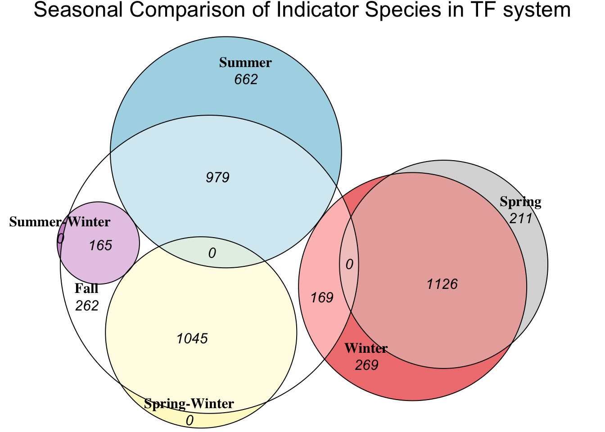
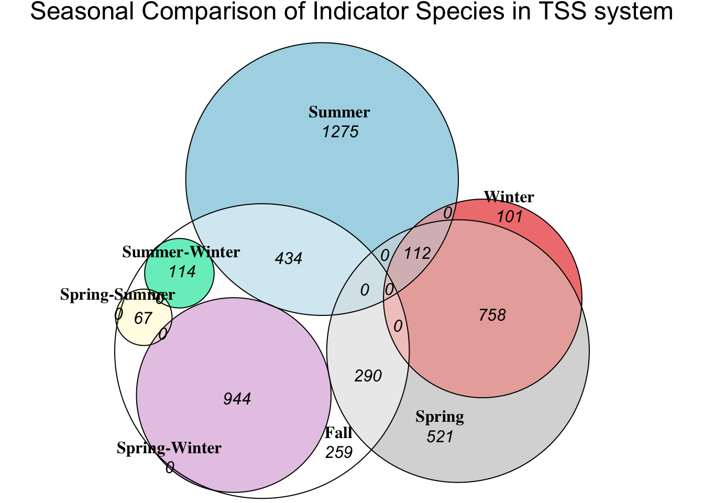

library(indicspecies)
library(ggplot2)
library(tibble)
library(readxl)
library(dplyr)
library(ape)
library(tidyr)
library(tidyverse)
library(ggvenn)
library(fmsb)
library(eulerr)
library(plotly)Indicator Species
Loading dependencies
Analysis on the 7 wwtp processes:
abundance_table <- read_excel("/Users/julietmalkowski/Desktop/Research/Kinetic_Model/abundance_table.xlsx")
#remove first 4 characters in every column name
colnames(abundance_table)<- substr(colnames(abundance_table), 5, nchar(colnames(abundance_table)))
abundance_table = as.data.frame(abundance_table)
#split first column by character '_' into two seperate columns
abundance_table[c('Process', 'Date')] <- str_split_fixed(abundance_table$le, '_', 2)
#drop le column
abundance_table = abundance_table[,-1]
#move last two columns to the front
abundance_table <- abundance_table %>%
select(Process, everything())
abundance_table <- abundance_table %>%
select(Date, everything())
#split first column by character '_' into two separate columns
abundance_table[c('Month', 'Year')] <- str_split_fixed(abundance_table$Date, '/', 2)
abundance_table <- abundance_table %>%
select(Month, everything())
#turn Month column into numeric
abundance_table$Month <- as.numeric(abundance_table$Month)
#Change AS-1 and AS-2 to AS
abundance_table$Process <- gsub("AS-1", "AS", abundance_table$Process)
abundance_table$Process <- gsub("AS-2", "AS", abundance_table$Process)
### Looking at each process
# Codes for each group:
# AD = 1
# AS = 2
# Eff = 3
# Inf = 4
# TF = 5
# TSS = 6
# WAS = 7
#Replace process names with codes
abundance_table$Process <- gsub("AD", "1", abundance_table$Process)
abundance_table$Process <- gsub("AS", "2", abundance_table$Process)
abundance_table$Process <- gsub("Eff", "3", abundance_table$Process)
abundance_table$Process <- gsub("Inf", "4", abundance_table$Process)
abundance_table$Process <- gsub("TF", "5", abundance_table$Process)
abundance_table$Process <- gsub("TSS", "6", abundance_table$Process)
abundance_table$Process <- gsub("W2", "7", abundance_table$Process)
df1 <- abundance_table %>%
select(-Year, -Date,-Month)
#Running Indicator Species Analysis
groupings = df1$Process
#duleg = TRUE which means that site group combinations will not be considered
indval <- multipatt(df1[,c(2:ncol(df1))], groupings,
control = how(nperm=999),duleg = TRUE)
sig.otus <- indval$sign %>% mutate(otu = rownames(.)) %>% filter(p.value < 0.01) %>% filter(stat > 0.5)
sig.otus <- indval$sign %>% mutate(index = case_when(index == 1 ~ "AD",
index == 2 ~ "AS",
index == 3 ~ "Eff",
index == 4 ~ "Inf",
index == 5 ~ "TF",
index == 6 ~ "TSS",
index == 7 ~ "WAS"))
sig.otus <- sig.otus %>% mutate(otu = rownames(.)) %>%
filter(p.value < 0.05) %>% filter(stat > 0.5) %>%
select(index, stat, p.value, otu) %>%
mutate(OTU = paste0("Zotu",otu)) Attaching taxonomic informaiton to indicator species in each group
Shown by variables: ad, as, eff, inf, tf, tss, and was
taxa = read_excel("/Users/julietmalkowski/Desktop/Research/Kinetic_Model/tax.xlsx")New names:
• `` -> `...1`merged_df <- merge(sig.otus, taxa[, c("OTU", "genus")], by = "OTU")
#create a new dataframe for each unique index value
grouped_list <- merged_df %>%
group_by(index) %>%
summarize(Values = list(genus))
ad <- unique(grouped_list$Values[grouped_list$index == "AD"][[1]])
as <- unique(grouped_list$Values[grouped_list$index == "AS"][[1]])
eff <- unique(grouped_list$Values[grouped_list$index == "Eff"][[1]])
inf <- unique(grouped_list$Values[grouped_list$index == "Inf"][[1]])
tf <- unique(grouped_list$Values[grouped_list$index == "TF"][[1]])
tss <- unique(grouped_list$Values[grouped_list$index == "TSS"][[1]])
was <- unique(grouped_list$Values[grouped_list$index == "WAS"][[1]])Looking at different seasons for each process
assign_season <- function(Month) {
if (Month %in% c(12, 01, 02)) {
return("Winter")
} else if (Month %in% c(03, 04, 05)) {
return("Spring")
} else if (Month %in% c(06, 07, 08)) {
return("Summer")
} else if (Month %in% c(09, 10, 11)) {
return("Fall")
} else {
return(NA)
}
}
df <- abundance_table %>%
mutate(Season = sapply(Month, assign_season)) %>%
group_by(Season, Process) %>%
mutate(Group = cur_group_id()) %>%
ungroup()
df <- df %>% select(Group,Process, Season, Month, everything())
#Codes for each group:
# AD-Fall = 1
# AS-Fall = 2
# Eff-Fall = 3
# Inf-Fall = 4
# TF-Fall = 5
# TSS_Fall = 6
# WAS-Fall = 7
# AD-Spring = 8
# AS-Spring = 9
# Eff-Spring = 10
# Inf-Spring = 11
# TF-Spring = 12
# TSS-Spring = 13
# WAS-Spring = 14
# AD-Summer = 15
# AS-Summer = 16
# Eff-Summer = 17
# Inf-Summer = 18
# TF-Summer = 19
# TSS-Summer = 20
# WAS-Summer = 21
# AD-Winter = 22
# AS-Winter = 23
# Eff-Winter = 24
# Inf-Winter = 25
# TF-Winter = 26
# TSS-Winter = 27
# WAS-Winter = 28
#Now we have our dataframe that contains a unique group number for each process and season
df <- df %>%
select(-Year, -Process, -Date, -Season, -Month)
#Species groups
AD = c(1, 8, 15, 22)
AS = c(2, 9, 16, 23)
Eff = c(3, 10, 17, 24)
Inf_ = c(4, 11, 18, 25)
TF = c(5, 12, 19, 26)
TSS = c(6, 13, 20, 27)
WAS = c(7, 14, 21, 28)
#Individual Species Analysis
ad_df = df %>% filter(Group %in% AD)
as_df = df %>% filter(Group %in% AS)
eff_df = df %>% filter(Group %in% Eff)
inf_df = df %>% filter(Group %in% Inf_)
tf_df = df %>% filter(Group %in% TF)
tss_df = df %>% filter(Group %in% TSS)
was_df = df %>% filter(Group %in% WAS)Anaerobic Digester
#AD
groupings = ad_df$Group
indval_ad <- multipatt(ad_df[,c(2:ncol(ad_df))], groupings,
control = how(nperm=999),duleg = FALSE)
#change index column values if index=1 then change to AD-Fall etc
ad_sig.otus <- indval_ad$sign %>% mutate(index = case_when(index == 1 ~ "Fall",
index == 2 ~ "Spring",
index == 3 ~ "Summer",
index == 4 ~ "Winter",
index == 5 ~ "Fall-Spring",
index == 6 ~ "Fall-Summer",
index == 7 ~ "Fall-Winter",
index == 8 ~ "Spring-Summer",
index == 9 ~ "Spring-Winter",
index == 10 ~ "Summer-Winter",
index == 11 ~ "Fall-Spring-Summer",
index == 12 ~ "Fall-Spring-Winter",
index == 13 ~ "Fall-Summer-Winter",
index == 14 ~ "Spring-Summer-Winter",
index == 15 ~ "Fall-Spring-Summer-Winter"
))
ad_sig.otus <- ad_sig.otus %>% mutate(otu = rownames(.)) %>%
filter(p.value < 0.05) %>% filter(stat > 0.5) %>%
select(index, stat, p.value, otu) %>%
mutate(Value = paste0("Zotu",otu))
grouped_list_ad <- ad_sig.otus %>%
group_by(index) %>%
summarize(Values = list(Value))
fall_ad <- grouped_list_ad$Values[grouped_list_ad$index == "Fall"][[1]]
spring_ad <- grouped_list_ad$Values[grouped_list_ad$index == "Spring"][[1]]
summer_ad <- grouped_list_ad$Values[grouped_list_ad$index == "Summer"][[1]]
winter_ad <- grouped_list_ad$Values[grouped_list_ad$index == "Winter"][[1]]
fall_spring_ad <- grouped_list_ad$Values[grouped_list_ad$index == "Fall-Spring"][[1]]
fall_summer_ad <- grouped_list_ad$Values[grouped_list_ad$index == "Fall-Summer"][[1]]
fall_winter_ad <- grouped_list_ad$Values[grouped_list_ad$index == "Fall-Winter"][[1]]
spring_summer_ad <- grouped_list_ad$Values[grouped_list_ad$index == "Spring-Summer"][[1]]
spring_winter_ad <- grouped_list_ad$Values[grouped_list_ad$index == "Spring-Winter"][[1]]
#summer_winter_ad <- grouped_list_ad$Values[grouped_list_ad$index == "Summer-Winter"][[1]]
fall_spring_summer_ad <- grouped_list_ad$Values[grouped_list_ad$index == "Fall-Spring-Summer"][[1]]
fall_spring_winter_ad <- grouped_list_ad$Values[grouped_list_ad$index == "Fall-Spring-Winter"][[1]]
fall_summer_winter_ad <- grouped_list_ad$Values[grouped_list_ad$index == "Fall-Summer-Winter"][[1]]
#spring_summer_winter_ad <- grouped_list_ad$Values[grouped_list_ad$index == "Spring-Summer-Winter"][[1]]
#fall_spring_summer_winter_ad <- grouped_list_ad$Values[grouped_list_ad$index == "Fall-Spring-Summer-Winter"][[1]]
# Define the sizes of each set and their intersections
set_sizes <- c(
Fall = ad_sig.otus %>% filter(index == "Fall") %>% nrow(),
Spring = ad_sig.otus %>% filter(index == "Spring") %>% nrow(),
Summer = ad_sig.otus %>% filter(index == "Summer") %>% nrow(),
Winter = ad_sig.otus %>% filter(index == "Winter") %>% nrow(),
"Fall&Spring" = ad_sig.otus %>% filter(index == "Fall-Spring") %>% nrow(),
"Fall&Summer" = ad_sig.otus %>% filter(index == "Fall-Summer") %>% nrow(),
"Fall&Winter" = ad_sig.otus %>% filter(index == "Fall-Winter") %>% nrow(),
"Spring&Summer" = ad_sig.otus %>% filter(index == "Spring-Summer") %>% nrow(),
"Spring&Winter" = ad_sig.otus %>% filter(index == "Spring-Winter") %>% nrow(),
"Summer&Winter" = ad_sig.otus %>% filter(index == "Summer-Winter") %>% nrow(),
"Fall&Spring-Summer" = ad_sig.otus %>% filter(index == "Fall-Spring-Summer") %>% nrow(),
"Fall&Spring-Winter" = ad_sig.otus %>% filter(index == "Fall-Spring-Winter") %>% nrow(),
"Fall&Summer-Winter" = ad_sig.otus %>% filter(index == "Fall-Summer-Winter") %>% nrow(),
"Spring&Summer&Winter" = ad_sig.otus %>% filter(index == "Spring-Summer-Winter") %>% nrow(),
"Fall&Spring&Summer&Winter" = ad_sig.otus %>% filter(index == "Fall-Spring-Summer-Winter") %>% nrow()
)
# Function to filter out small overlaps
filter_data <- function(data, threshold = 0.01) {
# Calculate the total size
total <- sum(data)
# Filter out entries that are below the threshold percentage of the total size
filtered_data <- data[data / total >= threshold]
return(filtered_data)
}
# Filter the data
filtered_data <- filter_data(set_sizes)
# Create the Euler diagram
fit <- euler(filtered_data)
# Plot the Euler diagram
plot(fit, labels = list(fontfamily = "serif"),
quantities = list(type = "counts", font = 3), main = "Seasonal Comparison of Indicator Species in AD system")Activated Sludge
#AS
groupings = as_df$Group
indval_as <- multipatt(as_df[,c(2:ncol(as_df))], groupings,
control = how(nperm=999),duleg = FALSE)
#change index column values if index=1 then change to AD-Fall etc
as_sig.otus <- indval_as$sign %>% mutate(index = case_when(index == 1 ~ "Fall",
index == 2 ~ "Spring",
index == 3 ~ "Summer",
index == 4 ~ "Winter",
index == 5 ~ "Fall-Spring",
index == 6 ~ "Fall-Summer",
index == 7 ~ "Fall-Winter",
index == 8 ~ "Spring-Summer",
index == 9 ~ "Spring-Winter",
index == 10 ~ "Summer-Winter",
index == 11 ~ "Fall-Spring-Summer",
index == 12 ~ "Fall-Spring-Winter",
index == 13 ~ "Fall-Summer-Winter",
index == 14 ~ "Spring-Summer-Winter",
index == 15 ~ "Fall-Spring-Summer-Winter"
))
as_sig.otus <- as_sig.otus %>% mutate(otu = rownames(.)) %>%
filter(p.value < 0.05) %>% filter(stat > 0.5) %>%
select(index, stat, p.value, otu) %>%
mutate(Value = paste0("Zotu",otu))
grouped_list_as <- as_sig.otus %>%
group_by(index) %>%
summarize(Values = list(Value))
fall_as <- grouped_list_as$Values[grouped_list_as$index == "Fall"][[1]]
spring_as <- grouped_list_as$Values[grouped_list_as$index == "Spring"][[1]]
summer_as <- grouped_list_as$Values[grouped_list_as$index == "Summer"][[1]]
winter_as <- grouped_list_as$Values[grouped_list_as$index == "Winter"][[1]]
fall_spring_as <- grouped_list_as$Values[grouped_list_as$index == "Fall-Spring"][[1]]
fall_summer_as <- grouped_list_as$Values[grouped_list_as$index == "Fall-Summer"][[1]]
fall_winter_as <- grouped_list_as$Values[grouped_list_as$index == "Fall-Winter"][[1]]
spring_summer_as <- grouped_list_as$Values[grouped_list_as$index == "Spring-Summer"][[1]]
spring_winter_as <- grouped_list_as$Values[grouped_list_as$index == "Spring-Winter"][[1]]
#summer_winter_as <- grouped_list_as$Values[grouped_list_as$index == "Summer-Winter"][[1]]
fall_spring_summer_as <- grouped_list_as$Values[grouped_list_as$index == "Fall-Spring-Summer"][[1]]
fall_spring_winter_as <- grouped_list_as$Values[grouped_list_as$index == "Fall-Spring-Winter"][[1]]
fall_summer_winter_as <- grouped_list_as$Values[grouped_list_as$index == "Fall-Summer-Winter"][[1]]
#spring_summer_winter_as <- grouped_list_as$Values[grouped_list_as$index == "Spring-Summer-Winter"][[1]]
#fall_spring_summer_winter_as <- grouped_list_as$Values[grouped_list_as$index == "Fall-Spring-Summer-Winter"][[1]]
# Define the sizes of each set and their intersections
set_sizes_as <- c(
Fall = as_sig.otus %>% filter(index == "Fall") %>% nrow(),
Spring = as_sig.otus %>% filter(index == "Spring") %>% nrow(),
Summer = as_sig.otus %>% filter(index == "Summer") %>% nrow(),
Winter = as_sig.otus %>% filter(index == "Winter") %>% nrow(),
"Fall&Spring" = as_sig.otus %>% filter(index == "Fall-Spring") %>% nrow(),
"Fall&Summer" = as_sig.otus %>% filter(index == "Fall-Summer") %>% nrow(),
"Fall&Winter" = as_sig.otus %>% filter(index == "Fall-Winter") %>% nrow(),
"Spring&Summer" = as_sig.otus %>% filter(index == "Spring-Summer") %>% nrow(),
"Spring&Winter" = as_sig.otus %>% filter(index == "Spring-Winter") %>% nrow(),
"Summer&Winter" = as_sig.otus %>% filter(index == "Summer-Winter") %>% nrow(),
"Fall&Spring-Summer" = as_sig.otus %>% filter(index == "Fall-Spring-Summer") %>% nrow(),
"Fall&Spring-Winter" = as_sig.otus %>% filter(index == "Fall-Spring-Winter") %>% nrow(),
"Fall&Summer-Winter" = as_sig.otus %>% filter(index == "Fall-Summer-Winter") %>% nrow(),
"Spring&Summer&Winter" = as_sig.otus %>% filter(index == "Spring-Summer-Winter") %>% nrow(),
"Fall&Spring&Summer&Winter" = as_sig.otus %>% filter(index == "Fall-Spring-Summer-Winter") %>% nrow()
)
# Filter the data
filtered_data_as <- filter_data(set_sizes_as)
# Create the Euler diagram
fit_as <- euler(filtered_data_as)
# Plot the Euler diagram
plot(fit_as, labels = list(fontfamily = "serif"),
quantities = list(type = "counts", font = 3), main = "Seasonal Comparison of Indicator Species in AS system")Effluent
#Eff
groupings = eff_df$Group
indval_eff <- multipatt(eff_df[,c(2:ncol(eff_df))], groupings,
control = how(nperm=999),duleg = FALSE)
#change index column values if index=1 then change to AD-Fall etc
eff_sig.otus <- indval_eff$sign %>% mutate(index = case_when(index == 1 ~ "Fall",
index == 2 ~ "Spring",
index == 3 ~ "Summer",
index == 4 ~ "Winter",
index == 5 ~ "Fall-Spring",
index == 6 ~ "Fall-Summer",
index == 7 ~ "Fall-Winter",
index == 8 ~ "Spring-Summer",
index == 9 ~ "Spring-Winter",
index == 10 ~ "Summer-Winter",
index == 11 ~ "Fall-Spring-Summer",
index == 12 ~ "Fall-Spring-Winter",
index == 13 ~ "Fall-Summer-Winter",
index == 14 ~ "Spring-Summer-Winter",
index == 15 ~ "Fall-Spring-Summer-Winter"
))
eff_sig.otus <- eff_sig.otus %>% mutate(otu = rownames(.)) %>%
filter(p.value < 0.05) %>% filter(stat > 0.5) %>%
select(index, stat, p.value, otu) %>%
mutate(Value = paste0("Zotu",otu))
#create a new dataframe for each unique index value
grouped_list_eff <- eff_sig.otus %>%
group_by(index) %>%
summarize(Values = list(Value))
fall_eff <- grouped_list_eff$Values[grouped_list_eff$index == "Fall"][[1]]
spring_eff <- grouped_list_eff$Values[grouped_list_eff$index == "Spring"][[1]]
summer_eff <- grouped_list_eff$Values[grouped_list_eff$index == "Summer"][[1]]
winter_eff <- grouped_list_eff$Values[grouped_list_eff$index == "Winter"][[1]]
fall_spring_eff <- grouped_list_eff$Values[grouped_list_eff$index == "Fall-Spring"][[1]]
fall_summer_eff <- grouped_list_eff$Values[grouped_list_eff$index == "Fall-Summer"][[1]]
fall_winter_eff <- grouped_list_eff$Values[grouped_list_eff$index == "Fall-Winter"][[1]]
spring_summer_eff <- grouped_list_eff$Values[grouped_list_eff$index == "Spring-Summer"][[1]]
spring_winter_eff <- grouped_list_eff$Values[grouped_list_eff$index == "Spring-Winter"][[1]]
summer_winter_eff <- grouped_list_eff$Values[grouped_list_eff$index == "Summer-Winter"][[1]]
fall_spring_summer_eff <- grouped_list_eff$Values[grouped_list_eff$index == "Fall-Spring-Summer"][[1]]
fall_spring_winter_eff <- grouped_list_eff$Values[grouped_list_eff$index == "Fall-Spring-Winter"][[1]]
fall_summer_winter_eff <- grouped_list_eff$Values[grouped_list_eff$index == "Fall-Summer-Winter"][[1]]
spring_summer_winter_eff <- grouped_list_eff$Values[grouped_list_eff$index == "Spring-Summer-Winter"][[1]]
#fall_spring_summer_winter_eff <- grouped_list_eff$Values[grouped_list_eff$index == "Fall-Spring-Summer-Winter"][[1]]
# Define the sizes of each set and their intersections
set_sizes_eff <- c(
Fall = eff_sig.otus %>% filter(index == "Fall") %>% nrow(),
Spring = eff_sig.otus %>% filter(index == "Spring") %>% nrow(),
Summer = eff_sig.otus %>% filter(index == "Summer") %>% nrow(),
Winter = eff_sig.otus %>% filter(index == "Winter") %>% nrow(),
"Fall&Spring" = eff_sig.otus %>% filter(index == "Fall-Spring") %>% nrow(),
"Fall&Summer" = eff_sig.otus %>% filter(index == "Fall-Summer") %>% nrow(),
"Fall&Winter" = eff_sig.otus %>% filter(index == "Fall-Winter") %>% nrow(),
"Spring&Summer" = eff_sig.otus %>% filter(index == "Spring-Summer") %>% nrow(),
"Spring&Winter" = eff_sig.otus %>% filter(index == "Spring-Winter") %>% nrow(),
"Summer&Winter" = eff_sig.otus %>% filter(index == "Summer-Winter") %>% nrow(),
"Fall&Spring-Summer" = eff_sig.otus %>% filter(index == "Fall-Spring-Summer") %>% nrow(),
"Fall&Spring-Winter" = eff_sig.otus %>% filter(index == "Fall-Spring-Winter") %>% nrow(),
"Fall&Summer-Winter" = eff_sig.otus %>% filter(index == "Fall-Summer-Winter") %>% nrow(),
"Spring&Summer&Winter" = eff_sig.otus %>% filter(index == "Spring-Summer-Winter") %>% nrow(),
"Fall&Spring&Summer&Winter" = eff_sig.otus %>% filter(index == "Fall-Spring-Summer-Winter") %>% nrow()
)
# Filter the data
filtered_data_eff <- filter_data(set_sizes_eff)
# Create the Euler diagram
fit_eff <- euler(filtered_data_eff)
# Plot the Euler diagram
plot(fit_eff, labels = list(fontfamily = "serif"),
quantities = list(type = "counts", font = 3), main = "Seasonal Comparison of Indicator Species in Eff system")Influent
#Inf
groupings = inf_df$Group
indval_inf <- multipatt(inf_df[,c(2:ncol(inf_df))], groupings,
control = how(nperm=999),duleg = FALSE)
#change index column values if index=1 then change to AD-Fall etc
inf_sig.otus <- indval_inf$sign %>% mutate(index = case_when(index == 1 ~ "Fall",
index == 2 ~ "Spring",
index == 3 ~ "Summer",
index == 4 ~ "Winter",
index == 5 ~ "Fall-Spring",
index == 6 ~ "Fall-Summer",
index == 7 ~ "Fall-Winter",
index == 8 ~ "Spring-Summer",
index == 9 ~ "Spring-Winter",
index == 10 ~ "Summer-Winter",
index == 11 ~ "Fall-Spring-Summer",
index == 12 ~ "Fall-Spring-Winter",
index == 13 ~ "Fall-Summer-Winter",
index == 14 ~ "Spring-Summer-Winter",
index == 15 ~ "Fall-Spring-Summer-Winter"
))
inf_sig.otus <- inf_sig.otus %>% mutate(otu = rownames(.)) %>%
filter(p.value < 0.05) %>% filter(stat > 0.5) %>%
select(index, stat, p.value, otu) %>%
mutate(Value = paste0("Zotu",otu))
#create a new dataframe for each unique index value
grouped_list_inf <- inf_sig.otus %>%
group_by(index) %>%
summarize(Values = list(Value))
fall_inf <- grouped_list_inf$Values[grouped_list_inf$index == "Fall"][[1]]
spring_inf <- grouped_list_inf$Values[grouped_list_inf$index == "Spring"][[1]]
summer_inf <- grouped_list_inf$Values[grouped_list_inf$index == "Summer"][[1]]
winter_inf <- grouped_list_inf$Values[grouped_list_inf$index == "Winter"][[1]]
fall_spring_inf <- grouped_list_inf$Values[grouped_list_inf$index == "Fall-Spring"][[1]]
fall_summer_inf <- grouped_list_inf$Values[grouped_list_inf$index == "Fall-Summer"][[1]]
fall_winter_inf <- grouped_list_inf$Values[grouped_list_inf$index == "Fall-Winter"][[1]]
spring_summer_inf <- grouped_list_inf$Values[grouped_list_inf$index == "Spring-Summer"][[1]]
spring_winter_inf <- grouped_list_inf$Values[grouped_list_inf$index == "Spring-Winter"][[1]]
summer_winter_inf <- grouped_list_inf$Values[grouped_list_inf$index == "Summer-Winter"][[1]]
fall_spring_summer_inf <- grouped_list_inf$Values[grouped_list_inf$index == "Fall-Spring-Summer"][[1]]
fall_spring_winter_inf <- grouped_list_inf$Values[grouped_list_inf$index == "Fall-Spring-Winter"][[1]]
fall_summer_winter_inf <- grouped_list_inf$Values[grouped_list_inf$index == "Fall-Summer-Winter"][[1]]
spring_summer_winter_inf <- grouped_list_inf$Values[grouped_list_inf$index == "Spring-Summer-Winter"][[1]]
#fall_spring_summer_winter_inf <- grouped_list_inf$Values[grouped_list_inf$index == "Fall-Spring-Summer-Winter"][[1]]
# Define the sizes of each set and their intersections
set_sizes_inf <- c(
Fall = inf_sig.otus %>% filter(index == "Fall") %>% nrow(),
Spring = inf_sig.otus %>% filter(index == "Spring") %>% nrow(),
Summer = inf_sig.otus %>% filter(index == "Summer") %>% nrow(),
Winter = inf_sig.otus %>% filter(index == "Winter") %>% nrow(),
"Fall&Spring" = inf_sig.otus %>% filter(index == "Fall-Spring") %>% nrow(),
"Fall&Summer" = inf_sig.otus %>% filter(index == "Fall-Summer") %>% nrow(),
"Fall&Winter" = inf_sig.otus %>% filter(index == "Fall-Winter") %>% nrow(),
"Spring&Summer" = inf_sig.otus %>% filter(index == "Spring-Summer") %>% nrow(),
"Spring&Winter" = inf_sig.otus %>% filter(index == "Spring-Winter") %>% nrow(),
"Summer&Winter" = inf_sig.otus %>% filter(index == "Summer-Winter") %>% nrow(),
"Fall&Spring-Summer" = inf_sig.otus %>% filter(index == "Fall-Spring-Summer") %>% nrow(),
"Fall&Spring-Winter" = inf_sig.otus %>% filter(index == "Fall-Spring-Winter") %>% nrow(),
"Fall&Summer-Winter" = inf_sig.otus %>% filter(index == "Fall-Summer-Winter") %>% nrow(),
"Spring&Summer&Winter" = inf_sig.otus %>% filter(index == "Spring-Summer-Winter") %>% nrow(),
"Fall&Spring&Summer&Winter" = inf_sig.otus %>% filter(index == "Fall-Spring-Summer-Winter") %>% nrow()
)
# Filter the data
filtered_data_inf <- filter_data(set_sizes_inf)
# Create the Euler diagram
fit_inf <- euler(filtered_data_inf)
# Plot the Euler diagram
plot(fit_inf, labels = list(fontfamily = "serif"),
quantities = list(type = "counts", font = 3), main = "Seasonal Comparison of Indicator Species in Inf system")
Trickling Filter
#TF
groupings = tf_df$Group
indval_tf <- multipatt(tf_df[,c(2:ncol(tf_df))], groupings,
control = how(nperm=999),duleg = FALSE)
#change index column values if index=1 then change to AD-Fall etc
tf_sig.otus <- indval_tf$sign %>% mutate(index = case_when(index == 1 ~ "Fall",
index == 2 ~ "Spring",
index == 3 ~ "Summer",
index == 4 ~ "Winter",
index == 5 ~ "Fall-Spring",
index == 6 ~ "Fall-Summer",
index == 7 ~ "Fall-Winter",
index == 8 ~ "Spring-Summer",
index == 9 ~ "Spring-Winter",
index == 10 ~ "Summer-Winter",
index == 11 ~ "Fall-Spring-Summer",
index == 12 ~ "Fall-Spring-Winter",
index == 13 ~ "Fall-Summer-Winter",
index == 14 ~ "Spring-Summer-Winter",
index == 15 ~ "Fall-Spring-Summer-Winter"
))
tf_sig.otus <- tf_sig.otus %>% mutate(otu = rownames(.)) %>%
filter(p.value < 0.05) %>% filter(stat > 0.5) %>%
select(index, stat, p.value, otu) %>%
mutate(Value = paste0("Zotu",otu))
grouped_list_tf <- tf_sig.otus %>%
group_by(index) %>%
summarize(Values = list(Value))
fall_tf <- grouped_list_tf$Values[grouped_list_tf$index == "Fall"][[1]]
spring_tf <- grouped_list_tf$Values[grouped_list_tf$index == "Spring"][[1]]
summer_tf <- grouped_list_tf$Values[grouped_list_tf$index == "Summer"][[1]]
winter_tf <- grouped_list_tf$Values[grouped_list_tf$index == "Winter"][[1]]
fall_spring_tf <- grouped_list_tf$Values[grouped_list_tf$index == "Fall-Spring"][[1]]
fall_summer_tf <- grouped_list_tf$Values[grouped_list_tf$index == "Fall-Summer"][[1]]
fall_winter_tf <- grouped_list_tf$Values[grouped_list_tf$index == "Fall-Winter"][[1]]
spring_summer_tf <- grouped_list_tf$Values[grouped_list_tf$index == "Spring-Summer"][[1]]
spring_winter_tf <- grouped_list_tf$Values[grouped_list_tf$index == "Spring-Winter"][[1]]
summer_winter_tf <- grouped_list_tf$Values[grouped_list_tf$index == "Summer-Winter"][[1]]
fall_spring_summer_tf <- grouped_list_tf$Values[grouped_list_tf$index == "Fall-Spring-Summer"][[1]]
fall_spring_winter_tf <- grouped_list_tf$Values[grouped_list_tf$index == "Fall-Spring-Winter"][[1]]
fall_summer_winter_tf <- grouped_list_tf$Values[grouped_list_tf$index == "Fall-Summer-Winter"][[1]]
spring_summer_winter_tf <- grouped_list_tf$Values[grouped_list_tf$index == "Spring-Summer-Winter"][[1]]
#fall_spring_summer_winter_tf <- grouped_list_tf$Values[grouped_list_tf$index == "Fall-Spring-Summer-Winter"][[1]]
# Define the sizes of each set and their intersections
set_sizes_tf <- c(
Fall = tf_sig.otus %>% filter(index == "Fall") %>% nrow(),
Spring = tf_sig.otus %>% filter(index == "Spring") %>% nrow(),
Summer = tf_sig.otus %>% filter(index == "Summer") %>% nrow(),
Winter = tf_sig.otus %>% filter(index == "Winter") %>% nrow(),
"Fall&Spring" = tf_sig.otus %>% filter(index == "Fall-Spring") %>% nrow(),
"Fall&Summer" = tf_sig.otus %>% filter(index == "Fall-Summer") %>% nrow(),
"Fall&Winter" = tf_sig.otus %>% filter(index == "Fall-Winter") %>% nrow(),
"Spring&Summer" = tf_sig.otus %>% filter(index == "Spring-Summer") %>% nrow(),
"Spring&Winter" = tf_sig.otus %>% filter(index == "Spring-Winter") %>% nrow(),
"Summer&Winter" = tf_sig.otus %>% filter(index == "Summer-Winter") %>% nrow(),
"Fall&Spring-Summer" = tf_sig.otus %>% filter(index == "Fall-Spring-Summer") %>% nrow(),
"Fall&Spring-Winter" = tf_sig.otus %>% filter(index == "Fall-Spring-Winter") %>% nrow(),
"Fall&Summer-Winter" = tf_sig.otus %>% filter(index == "Fall-Summer-Winter") %>% nrow(),
"Spring&Summer&Winter" = tf_sig.otus %>% filter(index == "Spring-Summer-Winter") %>% nrow(),
"Fall&Spring&Summer&Winter" = tf_sig.otus %>% filter(index == "Fall-Spring-Summer-Winter") %>% nrow()
)
# Filter the data
filtered_data_tf <- filter_data(set_sizes_tf)
# Create the Euler diagram
fit_tf <- euler(filtered_data_tf)
# Plot the Euler diagram
plot(fit_tf, labels = list(fontfamily = "serif"),
quantities = list(type = "counts", font = 3), main = "Seasonal Comparison of Indicator Species in TF system")
TSS
#TSS
groupings = tss_df$Group
indval_tss <- multipatt(tss_df[,c(2:ncol(tss_df))], groupings,
control = how(nperm=999),duleg = FALSE)
summary(indval_tss, indvalcomp=TRUE, alpha = 0.001)
Multilevel pattern analysis
---------------------------
Association function: IndVal.g
Significance level (alpha): 0.001
Total number of species: 16034
Selected number of species: 1820
Number of species associated to 1 group: 791
Number of species associated to 2 groups: 530
Number of species associated to 3 groups: 499
List of species associated to each combination:
Group 6 #sps. 35
A B stat p.value
70 0.9157 1.0000 0.957 0.001 ***
4074 0.8929 1.0000 0.945 0.001 ***
724 0.9529 0.8750 0.913 0.001 ***
2177 0.9259 0.8750 0.900 0.001 ***
1722 0.7882 1.0000 0.888 0.001 ***
1666 0.7646 1.0000 0.874 0.001 ***
2641 0.8605 0.8750 0.868 0.001 ***
1331 1.0000 0.7500 0.866 0.001 ***
363 1.0000 0.7500 0.866 0.001 ***
1396 0.9777 0.7500 0.856 0.001 ***
1650 0.9763 0.7500 0.856 0.001 ***
1680 0.9697 0.7500 0.853 0.001 ***
1087 0.9564 0.7500 0.847 0.001 ***
2872 0.9545 0.7500 0.846 0.001 ***
244 0.8062 0.8750 0.840 0.001 ***
1269 0.9398 0.7500 0.840 0.001 ***
392 0.9398 0.7500 0.840 0.001 ***
2293 0.9032 0.7500 0.823 0.001 ***
4195 0.8974 0.7500 0.820 0.001 ***
3706 0.8873 0.7500 0.816 0.001 ***
951 0.7574 0.8750 0.814 0.001 ***
6310 1.0000 0.6250 0.791 0.001 ***
583 1.0000 0.6250 0.791 0.001 ***
2060 1.0000 0.6250 0.791 0.001 ***
2914 1.0000 0.6250 0.791 0.001 ***
4280 1.0000 0.6250 0.791 0.001 ***
15534 1.0000 0.6250 0.791 0.001 ***
1760 0.8108 0.7500 0.780 0.001 ***
514 0.9533 0.6250 0.772 0.001 ***
2791 0.9524 0.6250 0.772 0.001 ***
1292 0.9500 0.6250 0.771 0.001 ***
1527 0.7902 0.7500 0.770 0.001 ***
4003 0.9322 0.6250 0.763 0.001 ***
3391 0.8475 0.6250 0.728 0.001 ***
5305 0.8333 0.6250 0.722 0.001 ***
Group 13 #sps. 108
A B stat p.value
3051 0.9697 1.0000 0.985 0.001 ***
2819 0.9374 1.0000 0.968 0.001 ***
5586 0.9283 1.0000 0.963 0.001 ***
10253 0.8989 1.0000 0.948 0.001 ***
14008 1.0000 0.8889 0.943 0.001 ***
2158 0.8802 1.0000 0.938 0.001 ***
10743 0.9730 0.8889 0.930 0.001 ***
12338 0.9670 0.8889 0.927 0.001 ***
3259 0.8492 1.0000 0.921 0.001 ***
5583 0.9462 0.8889 0.917 0.001 ***
17550 0.9343 0.8889 0.911 0.001 ***
1977 0.9335 0.8889 0.911 0.001 ***
13546 0.9302 0.8889 0.909 0.001 ***
4858 0.9143 0.8889 0.901 0.001 ***
11207 0.9072 0.8889 0.898 0.001 ***
13520 0.7907 1.0000 0.889 0.001 ***
12090 1.0000 0.7778 0.882 0.001 ***
10867 1.0000 0.7778 0.882 0.001 ***
8016 0.8670 0.8889 0.878 0.001 ***
6766 0.8612 0.8889 0.875 0.001 ***
1777 0.7619 1.0000 0.873 0.001 ***
7714 0.8454 0.8889 0.867 0.001 ***
11392 0.8421 0.8889 0.865 0.001 ***
10294 0.8421 0.8889 0.865 0.001 ***
9671 0.9585 0.7778 0.863 0.001 ***
9084 0.7429 1.0000 0.862 0.001 ***
4215 0.8348 0.8889 0.861 0.001 ***
2111 0.8344 0.8889 0.861 0.001 ***
4670 0.8314 0.8889 0.860 0.001 ***
7141 0.9455 0.7778 0.858 0.001 ***
7554 0.7347 1.0000 0.857 0.001 ***
4283 0.7273 1.0000 0.853 0.001 ***
6749 0.9302 0.7778 0.851 0.001 ***
7958 0.9256 0.7778 0.848 0.001 ***
15354 0.9256 0.7778 0.848 0.001 ***
6948 0.8000 0.8889 0.843 0.001 ***
17247 0.9143 0.7778 0.843 0.001 ***
7075 0.7097 1.0000 0.842 0.001 ***
18074 0.7939 0.8889 0.840 0.001 ***
12102 0.8989 0.7778 0.836 0.001 ***
9932 0.8989 0.7778 0.836 0.001 ***
7679 0.8989 0.7778 0.836 0.001 ***
12304 0.8889 0.7778 0.831 0.001 ***
12714 0.7716 0.8889 0.828 0.001 ***
6963 0.7652 0.8889 0.825 0.001 ***
18024 0.7652 0.8889 0.825 0.001 ***
7101 0.7577 0.8889 0.821 0.001 ***
10231 0.7568 0.8889 0.820 0.001 ***
4319 1.0000 0.6667 0.816 0.001 ***
15552 1.0000 0.6667 0.816 0.001 ***
16070 1.0000 0.6667 0.816 0.001 ***
12839 0.7399 0.8889 0.811 0.001 ***
18302 0.8421 0.7778 0.809 0.001 ***
10685 0.8421 0.7778 0.809 0.001 ***
10790 0.7353 0.8889 0.808 0.001 ***
6120 0.7273 0.8889 0.804 0.001 ***
10461 0.7273 0.8889 0.804 0.001 ***
6395 0.8302 0.7778 0.804 0.001 ***
9638 0.8235 0.7778 0.800 0.001 ***
14814 0.7134 0.8889 0.796 0.001 ***
11227 0.8085 0.7778 0.793 0.001 ***
11561 0.7070 0.8889 0.793 0.001 ***
7994 0.7980 0.7778 0.788 0.001 ***
11941 0.9302 0.6667 0.787 0.001 ***
8019 0.7964 0.7778 0.787 0.001 ***
13256 0.7939 0.7778 0.786 0.001 ***
13567 0.7874 0.7778 0.783 0.001 ***
8154 0.9143 0.6667 0.781 0.001 ***
12252 0.7805 0.7778 0.779 0.001 ***
12445 0.7805 0.7778 0.779 0.001 ***
14405 0.9072 0.6667 0.778 0.001 ***
16604 0.9072 0.6667 0.778 0.001 ***
3764 0.9072 0.6667 0.778 0.001 ***
14950 0.9032 0.6667 0.776 0.001 ***
14970 0.7731 0.7778 0.775 0.001 ***
10466 0.8989 0.6667 0.774 0.001 ***
4233 0.7568 0.7778 0.767 0.001 ***
10257 0.7568 0.7778 0.767 0.001 ***
18097 0.7568 0.7778 0.767 0.001 ***
15729 0.6617 0.8889 0.767 0.001 ***
11239 0.8767 0.6667 0.765 0.001 ***
15025 0.8767 0.6667 0.765 0.001 ***
12134 0.8696 0.6667 0.761 0.001 ***
5743 0.8615 0.6667 0.758 0.001 ***
9523 0.8615 0.6667 0.758 0.001 ***
16187 0.8615 0.6667 0.758 0.001 ***
8601 0.8594 0.6667 0.757 0.001 ***
3950 0.8525 0.6667 0.754 0.001 ***
14379 0.7273 0.7778 0.752 0.001 ***
14510 0.7273 0.7778 0.752 0.001 ***
17179 0.7273 0.7778 0.752 0.001 ***
18003 0.8421 0.6667 0.749 0.001 ***
11021 0.8421 0.6667 0.749 0.001 ***
12938 0.8421 0.6667 0.749 0.001 ***
9442 0.8421 0.6667 0.749 0.001 ***
14036 1.0000 0.5556 0.745 0.001 ***
11037 1.0000 0.5556 0.745 0.001 ***
18196 1.0000 0.5556 0.745 0.001 ***
7628 1.0000 0.5556 0.745 0.001 ***
12649 1.0000 0.5556 0.745 0.001 ***
11791 1.0000 0.5556 0.745 0.001 ***
7687 0.8163 0.6667 0.738 0.001 ***
12489 0.8000 0.6667 0.730 0.001 ***
13706 0.8000 0.6667 0.730 0.001 ***
16910 0.8000 0.6667 0.730 0.001 ***
12065 0.7939 0.6667 0.728 0.001 ***
11383 0.7568 0.6667 0.710 0.001 ***
16632 0.7568 0.6667 0.710 0.001 ***
Group 20 #sps. 626
A B stat p.value
217 1.0000 1.0000 1.000 0.001 ***
1487 1.0000 1.0000 1.000 0.001 ***
604 1.0000 1.0000 1.000 0.001 ***
655 0.9697 1.0000 0.985 0.001 ***
1028 0.9697 1.0000 0.985 0.001 ***
259 0.9682 1.0000 0.984 0.001 ***
628 0.9658 1.0000 0.983 0.001 ***
528 0.9597 1.0000 0.980 0.001 ***
175 0.9596 1.0000 0.980 0.001 ***
247 0.9585 1.0000 0.979 0.001 ***
2553 0.9541 1.0000 0.977 0.001 ***
377 0.9538 1.0000 0.977 0.001 ***
421 0.9496 1.0000 0.974 0.001 ***
783 0.9491 1.0000 0.974 0.001 ***
39 0.9490 1.0000 0.974 0.001 ***
249 0.9462 1.0000 0.973 0.001 ***
483 0.9438 1.0000 0.972 0.001 ***
606 0.9412 1.0000 0.970 0.001 ***
919 0.9409 1.0000 0.970 0.001 ***
1392 0.9405 1.0000 0.970 0.001 ***
843 0.9398 1.0000 0.969 0.001 ***
469 0.9367 1.0000 0.968 0.001 ***
3839 0.9351 1.0000 0.967 0.001 ***
2957 0.9333 1.0000 0.966 0.001 ***
3717 0.9315 1.0000 0.965 0.001 ***
1227 0.9292 1.0000 0.964 0.001 ***
1113 0.9282 1.0000 0.963 0.001 ***
2297 0.9275 1.0000 0.963 0.001 ***
3338 0.9275 1.0000 0.963 0.001 ***
266 0.9226 1.0000 0.961 0.001 ***
1218 0.9215 1.0000 0.960 0.001 ***
824 0.9215 1.0000 0.960 0.001 ***
3553 0.9206 1.0000 0.959 0.001 ***
350 0.9191 1.0000 0.959 0.001 ***
1566 0.9171 1.0000 0.958 0.001 ***
105 0.9165 1.0000 0.957 0.001 ***
1031 0.9157 1.0000 0.957 0.001 ***
1804 0.9148 1.0000 0.956 0.001 ***
352 0.9141 1.0000 0.956 0.001 ***
785 0.9139 1.0000 0.956 0.001 ***
1217 0.9137 1.0000 0.956 0.001 ***
3882 0.9137 1.0000 0.956 0.001 ***
1309 0.9123 1.0000 0.955 0.001 ***
1913 0.9080 1.0000 0.953 0.001 ***
1567 0.9071 1.0000 0.952 0.001 ***
1253 0.9068 1.0000 0.952 0.001 ***
245 0.9058 1.0000 0.952 0.001 ***
62 0.9047 1.0000 0.951 0.001 ***
491 0.9009 1.0000 0.949 0.001 ***
141 0.9001 1.0000 0.949 0.001 ***
2190 1.0000 0.9000 0.949 0.001 ***
3683 1.0000 0.9000 0.949 0.001 ***
2338 0.9000 1.0000 0.949 0.001 ***
2676 1.0000 0.9000 0.949 0.001 ***
4402 1.0000 0.9000 0.949 0.001 ***
285 0.8987 1.0000 0.948 0.001 ***
28 0.8984 1.0000 0.948 0.001 ***
2099 0.8951 1.0000 0.946 0.001 ***
3843 0.8951 1.0000 0.946 0.001 ***
275 0.8947 1.0000 0.946 0.001 ***
670 0.8927 1.0000 0.945 0.001 ***
456 0.8921 1.0000 0.945 0.001 ***
307 0.8915 1.0000 0.944 0.001 ***
1521 0.8900 1.0000 0.943 0.001 ***
1705 0.8881 1.0000 0.942 0.001 ***
820 0.8860 1.0000 0.941 0.001 ***
288 0.8848 1.0000 0.941 0.001 ***
1532 0.8842 1.0000 0.940 0.001 ***
1518 0.8837 1.0000 0.940 0.001 ***
891 0.8837 1.0000 0.940 0.001 ***
42 0.8831 1.0000 0.940 0.001 ***
2076 0.8829 1.0000 0.940 0.001 ***
2533 0.9799 0.9000 0.939 0.001 ***
171 0.8816 1.0000 0.939 0.001 ***
61 0.8810 1.0000 0.939 0.001 ***
230 0.9785 0.9000 0.938 0.001 ***
575 0.8803 1.0000 0.938 0.001 ***
786 0.8799 1.0000 0.938 0.001 ***
25 0.8798 1.0000 0.938 0.001 ***
723 0.9770 0.9000 0.938 0.001 ***
289 0.8791 1.0000 0.938 0.001 ***
1247 0.8789 1.0000 0.937 0.001 ***
1906 0.9761 0.9000 0.937 0.001 ***
1076 0.8780 1.0000 0.937 0.001 ***
1723 0.8780 1.0000 0.937 0.001 ***
2522 0.8760 1.0000 0.936 0.001 ***
551 0.8760 1.0000 0.936 0.001 ***
594 0.8745 1.0000 0.935 0.001 ***
18 0.8736 1.0000 0.935 0.001 ***
1894 0.9704 0.9000 0.935 0.001 ***
3029 0.8731 1.0000 0.934 0.001 ***
1796 0.9697 0.9000 0.934 0.001 ***
209 0.8725 1.0000 0.934 0.001 ***
684 0.8718 1.0000 0.934 0.001 ***
2644 0.8718 1.0000 0.934 0.001 ***
250 0.8715 1.0000 0.934 0.001 ***
104 0.9647 0.9000 0.932 0.001 ***
197 0.8675 1.0000 0.931 0.001 ***
1472 0.8673 1.0000 0.931 0.001 ***
2730 0.9612 0.9000 0.930 0.001 ***
4198 0.9600 0.9000 0.930 0.001 ***
123 0.8631 1.0000 0.929 0.001 ***
1008 0.8629 1.0000 0.929 0.001 ***
2112 0.9574 0.9000 0.928 0.001 ***
110 0.8604 1.0000 0.928 0.001 ***
2822 0.9558 0.9000 0.927 0.001 ***
3068 0.8571 1.0000 0.926 0.001 ***
2650 0.8571 1.0000 0.926 0.001 ***
1874 0.8562 1.0000 0.925 0.001 ***
674 0.9505 0.9000 0.925 0.001 ***
4818 0.9505 0.9000 0.925 0.001 ***
22 0.8540 1.0000 0.924 0.001 ***
76 0.8535 1.0000 0.924 0.001 ***
24 0.8531 1.0000 0.924 0.001 ***
3277 0.8529 1.0000 0.924 0.001 ***
1484 0.9474 0.9000 0.923 0.001 ***
1790 0.9470 0.9000 0.923 0.001 ***
686 0.9470 0.9000 0.923 0.001 ***
3589 0.9462 0.9000 0.923 0.001 ***
5090 0.9462 0.9000 0.923 0.001 ***
4719 0.9438 0.9000 0.922 0.001 ***
3321 0.9438 0.9000 0.922 0.001 ***
3987 0.9438 0.9000 0.922 0.001 ***
1930 0.9433 0.9000 0.921 0.001 ***
581 0.9432 0.9000 0.921 0.001 ***
2335 0.8485 1.0000 0.921 0.001 ***
1956 0.8485 1.0000 0.921 0.001 ***
1187 0.9425 0.9000 0.921 0.001 ***
779 0.9412 0.9000 0.920 0.001 ***
1195 0.8469 1.0000 0.920 0.001 ***
43 0.8466 1.0000 0.920 0.001 ***
1043 0.8464 1.0000 0.920 0.001 ***
233 0.8458 1.0000 0.920 0.001 ***
1957 0.8450 1.0000 0.919 0.001 ***
2057 0.9383 0.9000 0.919 0.001 ***
2135 0.9383 0.9000 0.919 0.001 ***
2384 0.9383 0.9000 0.919 0.001 ***
2512 0.9383 0.9000 0.919 0.001 ***
185 0.8421 1.0000 0.918 0.001 ***
82 0.8418 1.0000 0.917 0.001 ***
2949 0.9351 0.9000 0.917 0.001 ***
1410 0.9351 0.9000 0.917 0.001 ***
555 0.9351 0.9000 0.917 0.001 ***
517 0.9342 0.9000 0.917 0.001 ***
1513 0.8395 1.0000 0.916 0.001 ***
5195 0.9315 0.9000 0.916 0.001 ***
172 0.8373 1.0000 0.915 0.001 ***
745 0.8371 1.0000 0.915 0.001 ***
152 0.8359 1.0000 0.914 0.001 ***
1225 0.9275 0.9000 0.914 0.001 ***
3592 0.9275 0.9000 0.914 0.001 ***
325 0.8338 1.0000 0.913 0.001 ***
329 0.8333 1.0000 0.913 0.001 ***
2503 0.8327 1.0000 0.913 0.001 ***
836 0.8322 1.0000 0.912 0.001 ***
536 0.8310 1.0000 0.912 0.001 ***
905 0.8302 1.0000 0.911 0.001 ***
1571 0.9219 0.9000 0.911 0.001 ***
2797 0.9219 0.9000 0.911 0.001 ***
2170 0.8281 1.0000 0.910 0.001 ***
825 0.8276 1.0000 0.910 0.001 ***
267 0.8276 1.0000 0.910 0.001 ***
3459 0.8276 1.0000 0.910 0.001 ***
410 0.9192 0.9000 0.910 0.001 ***
647 0.8269 1.0000 0.909 0.001 ***
258 0.8264 1.0000 0.909 0.001 ***
562 0.8263 1.0000 0.909 0.001 ***
3613 0.9180 0.9000 0.909 0.001 ***
822 0.8259 1.0000 0.909 0.001 ***
773 0.8255 1.0000 0.909 0.001 ***
3081 0.9153 0.9000 0.908 0.001 ***
624 0.8235 1.0000 0.907 0.001 ***
621 0.8232 1.0000 0.907 0.001 ***
166 0.8226 1.0000 0.907 0.001 ***
437 0.9134 0.9000 0.907 0.001 ***
1279 0.8214 1.0000 0.906 0.001 ***
1955 0.9123 0.9000 0.906 0.001 ***
1402 0.9123 0.9000 0.906 0.001 ***
872 0.9123 0.9000 0.906 0.001 ***
1467 0.9123 0.9000 0.906 0.001 ***
2695 0.9123 0.9000 0.906 0.001 ***
4829 0.9123 0.9000 0.906 0.001 ***
529 0.8209 1.0000 0.906 0.001 ***
963 0.8201 1.0000 0.906 0.001 ***
2666 0.9107 0.9000 0.905 0.001 ***
280 0.8191 1.0000 0.905 0.001 ***
4991 0.8190 1.0000 0.905 0.001 ***
1286 0.8188 1.0000 0.905 0.001 ***
835 0.8185 1.0000 0.905 0.001 ***
1365 0.9091 0.9000 0.905 0.001 ***
3030 0.8182 1.0000 0.905 0.001 ***
449 0.9080 0.9000 0.904 0.001 ***
369 0.8164 1.0000 0.904 0.001 ***
1229 0.9069 0.9000 0.903 0.001 ***
719 0.8134 1.0000 0.902 0.001 ***
340 0.8133 1.0000 0.902 0.001 ***
505 0.9032 0.9000 0.902 0.001 ***
1854 0.9020 0.9000 0.901 0.001 ***
1159 0.8110 1.0000 0.901 0.001 ***
34 0.8099 1.0000 0.900 0.001 ***
1575 0.8094 1.0000 0.900 0.001 ***
1681 0.8980 0.9000 0.899 0.001 ***
2308 0.8963 0.9000 0.898 0.001 ***
815 0.8951 0.9000 0.898 0.001 ***
256 0.8054 1.0000 0.897 0.001 ***
2546 0.8921 0.9000 0.896 0.001 ***
118 0.8026 1.0000 0.896 0.001 ***
177 0.8023 1.0000 0.896 0.001 ***
652 0.8889 0.9000 0.894 0.001 ***
977 1.0000 0.8000 0.894 0.001 ***
2802 1.0000 0.8000 0.894 0.001 ***
2963 1.0000 0.8000 0.894 0.001 ***
3470 1.0000 0.8000 0.894 0.001 ***
2622 1.0000 0.8000 0.894 0.001 ***
2566 1.0000 0.8000 0.894 0.001 ***
5282 1.0000 0.8000 0.894 0.001 ***
761 1.0000 0.8000 0.894 0.001 ***
590 1.0000 0.8000 0.894 0.001 ***
958 1.0000 0.8000 0.894 0.001 ***
5345 1.0000 0.8000 0.894 0.001 ***
5212 1.0000 0.8000 0.894 0.001 ***
1973 1.0000 0.8000 0.894 0.001 ***
339 1.0000 0.8000 0.894 0.001 ***
1288 1.0000 0.8000 0.894 0.001 ***
572 1.0000 0.8000 0.894 0.001 ***
2183 1.0000 0.8000 0.894 0.001 ***
2278 0.8000 1.0000 0.894 0.001 ***
4405 1.0000 0.8000 0.894 0.001 ***
5749 1.0000 0.8000 0.894 0.001 ***
8080 1.0000 0.8000 0.894 0.001 ***
680 0.7978 1.0000 0.893 0.001 ***
3441 0.8837 0.9000 0.892 0.001 ***
3719 0.8837 0.9000 0.892 0.001 ***
1144 0.8807 0.9000 0.890 0.001 ***
651 0.8780 0.9000 0.889 0.001 ***
4461 0.8780 0.9000 0.889 0.001 ***
300 0.9861 0.8000 0.888 0.001 ***
2492 0.8739 0.9000 0.887 0.001 ***
1888 0.7863 1.0000 0.887 0.001 ***
2082 0.8731 0.9000 0.886 0.001 ***
618 0.9814 0.8000 0.886 0.001 ***
3591 0.8696 0.9000 0.885 0.001 ***
84 0.7820 1.0000 0.884 0.001 ***
3064 0.8684 0.9000 0.884 0.001 ***
645 0.8667 0.9000 0.883 0.001 ***
2351 0.7794 1.0000 0.883 0.001 ***
1074 0.9735 0.8000 0.883 0.001 ***
1618 0.7788 1.0000 0.882 0.001 ***
2024 0.8649 0.9000 0.882 0.001 ***
2151 0.8649 0.9000 0.882 0.001 ***
1873 0.8649 0.9000 0.882 0.001 ***
1753 0.8649 0.9000 0.882 0.001 ***
3432 0.8649 0.9000 0.882 0.001 ***
1966 0.8649 0.9000 0.882 0.001 ***
373 0.8647 0.9000 0.882 0.001 ***
3738 0.8644 0.9000 0.882 0.001 ***
311 0.9711 0.8000 0.881 0.001 ***
8 0.7761 1.0000 0.881 0.001 ***
1800 0.8606 0.9000 0.880 0.001 ***
3572 0.7742 1.0000 0.880 0.001 ***
715 0.7727 1.0000 0.879 0.001 ***
2315 0.8583 0.9000 0.879 0.001 ***
1204 0.8579 0.9000 0.879 0.001 ***
659 0.7701 1.0000 0.878 0.001 ***
3997 0.9612 0.8000 0.877 0.001 ***
367 0.7681 1.0000 0.876 0.001 ***
1868 0.9587 0.8000 0.876 0.001 ***
1611 0.7666 1.0000 0.876 0.001 ***
23 0.8517 0.9000 0.875 0.001 ***
930 0.7656 1.0000 0.875 0.001 ***
4743 0.9558 0.8000 0.874 0.001 ***
2237 0.8485 0.9000 0.874 0.001 ***
809 0.9541 0.8000 0.874 0.001 ***
3577 0.8471 0.9000 0.873 0.001 ***
2355 0.8462 0.9000 0.873 0.001 ***
264 0.8456 0.9000 0.872 0.001 ***
2630 0.9505 0.8000 0.872 0.001 ***
3560 0.8447 0.9000 0.872 0.001 ***
2211 0.8438 0.9000 0.871 0.001 ***
1706 0.8438 0.9000 0.871 0.001 ***
1768 0.8428 0.9000 0.871 0.001 ***
1023 0.8421 0.9000 0.871 0.001 ***
356 0.9462 0.8000 0.870 0.001 ***
4641 0.7564 1.0000 0.870 0.001 ***
2640 0.8402 0.9000 0.870 0.001 ***
225 0.8391 0.9000 0.869 0.001 ***
2322 0.9438 0.8000 0.869 0.001 ***
2569 0.8387 0.9000 0.869 0.001 ***
988 0.8387 0.9000 0.869 0.001 ***
86 0.8387 0.9000 0.869 0.001 ***
3426 0.8387 0.9000 0.869 0.001 ***
563 0.8372 0.9000 0.868 0.001 ***
5083 0.9412 0.8000 0.868 0.001 ***
2910 0.7522 1.0000 0.867 0.001 ***
2736 0.8344 0.9000 0.867 0.001 ***
5402 0.9383 0.8000 0.866 0.001 ***
475 0.9383 0.8000 0.866 0.001 ***
2467 0.8333 0.9000 0.866 0.001 ***
3495 0.7500 1.0000 0.866 0.001 ***
2732 0.9367 0.8000 0.866 0.001 ***
2586 0.8322 0.9000 0.865 0.001 ***
1824 0.8315 0.9000 0.865 0.001 ***
1027 0.9351 0.8000 0.865 0.001 ***
904 0.9351 0.8000 0.865 0.001 ***
390 0.7478 1.0000 0.865 0.001 ***
1445 0.7471 1.0000 0.864 0.001 ***
2496 0.7469 1.0000 0.864 0.001 ***
3564 0.9315 0.8000 0.863 0.001 ***
406 0.8276 0.9000 0.863 0.001 ***
1271 0.7444 1.0000 0.863 0.001 ***
1968 0.8251 0.9000 0.862 0.001 ***
1621 0.9275 0.8000 0.861 0.001 ***
704 0.9275 0.8000 0.861 0.001 ***
1238 0.9265 0.8000 0.861 0.001 ***
359 0.9263 0.8000 0.861 0.001 ***
1549 0.9254 0.8000 0.860 0.001 ***
3545 0.8214 0.9000 0.860 0.001 ***
4016 0.9231 0.8000 0.859 0.001 ***
3312 0.9231 0.8000 0.859 0.001 ***
1040 0.9215 0.8000 0.859 0.001 ***
2587 0.9215 0.8000 0.859 0.001 ***
3121 0.9206 0.8000 0.858 0.001 ***
1596 0.9180 0.8000 0.857 0.001 ***
2888 0.9180 0.8000 0.857 0.001 ***
3287 0.8148 0.9000 0.856 0.001 ***
3867 0.8148 0.9000 0.856 0.001 ***
1915 0.9153 0.8000 0.856 0.001 ***
2841 0.9143 0.8000 0.855 0.001 ***
4044 0.9123 0.8000 0.854 0.001 ***
6181 0.9123 0.8000 0.854 0.001 ***
471 0.9102 0.8000 0.853 0.001 ***
7488 0.8090 0.9000 0.853 0.001 ***
1832 0.8084 0.9000 0.853 0.001 ***
3516 0.9088 0.8000 0.853 0.001 ***
4407 0.8077 0.9000 0.853 0.001 ***
2988 0.8077 0.9000 0.853 0.001 ***
2042 0.8062 0.9000 0.852 0.001 ***
993 0.8052 0.9000 0.851 0.001 ***
2770 0.9057 0.8000 0.851 0.001 ***
5665 0.9057 0.8000 0.851 0.001 ***
8044 0.9057 0.8000 0.851 0.001 ***
805 0.8039 0.9000 0.851 0.001 ***
2433 0.9031 0.8000 0.850 0.001 ***
4019 0.9020 0.8000 0.849 0.001 ***
886 0.8000 0.9000 0.849 0.001 ***
1030 0.8000 0.9000 0.849 0.001 ***
2093 0.8000 0.9000 0.849 0.001 ***
2948 0.8980 0.8000 0.848 0.001 ***
343 0.7955 0.9000 0.846 0.001 ***
512 0.7158 1.0000 0.846 0.001 ***
3097 0.7156 1.0000 0.846 0.001 ***
3871 0.8936 0.8000 0.846 0.001 ***
90 0.7941 0.9000 0.845 0.001 ***
3223 0.8921 0.8000 0.845 0.001 ***
1373 0.8921 0.8000 0.845 0.001 ***
1107 0.7910 0.9000 0.844 0.001 ***
3712 0.7904 0.9000 0.843 0.001 ***
5050 0.8889 0.8000 0.843 0.001 ***
3150 0.8889 0.8000 0.843 0.001 ***
5081 0.8889 0.8000 0.843 0.001 ***
4668 0.8889 0.8000 0.843 0.001 ***
1042 0.7107 1.0000 0.843 0.001 ***
453 0.7887 0.9000 0.843 0.001 ***
818 0.7863 0.9000 0.841 0.001 ***
3515 0.8837 0.8000 0.841 0.001 ***
947 0.7853 0.9000 0.841 0.001 ***
1202 0.8826 0.8000 0.840 0.001 ***
2152 0.7059 1.0000 0.840 0.001 ***
2102 0.8819 0.8000 0.840 0.001 ***
1807 0.8819 0.8000 0.840 0.001 ***
430 0.7053 1.0000 0.840 0.001 ***
3078 0.7826 0.9000 0.839 0.001 ***
5885 0.8780 0.8000 0.838 0.001 ***
1817 0.8780 0.8000 0.838 0.001 ***
2906 0.8750 0.8000 0.837 0.001 ***
2893 1.0000 0.7000 0.837 0.001 ***
5650 1.0000 0.7000 0.837 0.001 ***
3727 1.0000 0.7000 0.837 0.001 ***
6251 1.0000 0.7000 0.837 0.001 ***
8097 1.0000 0.7000 0.837 0.001 ***
4170 1.0000 0.7000 0.837 0.001 ***
2464 1.0000 0.7000 0.837 0.001 ***
928 1.0000 0.7000 0.837 0.001 ***
1140 1.0000 0.7000 0.837 0.001 ***
889 1.0000 0.7000 0.837 0.001 ***
2547 1.0000 0.7000 0.837 0.001 ***
743 1.0000 0.7000 0.837 0.001 ***
1193 1.0000 0.7000 0.837 0.001 ***
2186 1.0000 0.7000 0.837 0.001 ***
2262 1.0000 0.7000 0.837 0.001 ***
2629 1.0000 0.7000 0.837 0.001 ***
2413 1.0000 0.7000 0.837 0.001 ***
2425 1.0000 0.7000 0.837 0.001 ***
7124 1.0000 0.7000 0.837 0.001 ***
3219 1.0000 0.7000 0.837 0.001 ***
5286 1.0000 0.7000 0.837 0.001 ***
2986 1.0000 0.7000 0.837 0.001 ***
2725 1.0000 0.7000 0.837 0.001 ***
6046 1.0000 0.7000 0.837 0.001 ***
5600 1.0000 0.7000 0.837 0.001 ***
6942 1.0000 0.7000 0.837 0.001 ***
3551 1.0000 0.7000 0.837 0.001 ***
1736 0.7773 0.9000 0.836 0.001 ***
2653 0.7766 0.9000 0.836 0.001 ***
2450 0.8696 0.8000 0.834 0.001 ***
381 0.6948 1.0000 0.834 0.001 ***
2816 0.7706 0.9000 0.833 0.001 ***
3984 0.7706 0.9000 0.833 0.001 ***
1383 0.8649 0.8000 0.832 0.001 ***
1426 0.7674 0.9000 0.831 0.001 ***
1924 0.8619 0.8000 0.830 0.001 ***
2393 0.7655 0.9000 0.830 0.001 ***
2922 0.8611 0.8000 0.830 0.001 ***
794 0.7645 0.9000 0.830 0.001 ***
1799 0.7644 0.9000 0.829 0.001 ***
671 0.7632 0.9000 0.829 0.001 ***
1155 0.7631 0.9000 0.829 0.001 ***
2414 0.8581 0.8000 0.829 0.001 ***
2301 0.7619 0.9000 0.828 0.001 ***
4969 0.8571 0.8000 0.828 0.001 ***
6350 0.7619 0.9000 0.828 0.001 ***
4559 0.8557 0.8000 0.827 0.001 ***
561 0.8544 0.8000 0.827 0.001 ***
1492 0.9761 0.7000 0.827 0.001 ***
3972 0.7582 0.9000 0.826 0.001 ***
4011 0.6809 1.0000 0.825 0.001 ***
239 0.7562 0.9000 0.825 0.001 ***
439 0.8485 0.8000 0.824 0.001 ***
1000 0.8485 0.8000 0.824 0.001 ***
2946 0.8485 0.8000 0.824 0.001 ***
6094 0.8485 0.8000 0.824 0.001 ***
3302 0.8463 0.8000 0.823 0.001 ***
602 0.6753 1.0000 0.822 0.001 ***
2594 0.8423 0.8000 0.821 0.001 ***
649 0.7487 0.9000 0.821 0.001 ***
3421 0.8421 0.8000 0.821 0.001 ***
2632 0.7475 0.9000 0.820 0.001 ***
1281 0.8408 0.8000 0.820 0.001 ***
1250 0.8387 0.8000 0.819 0.001 ***
806 0.9573 0.7000 0.819 0.001 ***
1699 0.8366 0.8000 0.818 0.001 ***
1720 0.8366 0.8000 0.818 0.001 ***
2833 0.7436 0.9000 0.818 0.001 ***
1201 0.8352 0.8000 0.817 0.001 ***
2063 0.7423 0.9000 0.817 0.001 ***
2856 0.7416 0.9000 0.817 0.001 ***
322 0.8338 0.8000 0.817 0.001 ***
3527 0.9524 0.7000 0.816 0.001 ***
3379 0.8333 0.8000 0.816 0.001 ***
1692 0.8329 0.8000 0.816 0.001 ***
4086 0.9505 0.7000 0.816 0.001 ***
2615 0.8309 0.8000 0.815 0.001 ***
744 0.9485 0.7000 0.815 0.001 ***
579 0.8299 0.8000 0.815 0.001 ***
2286 0.9462 0.7000 0.814 0.001 ***
1560 0.8276 0.8000 0.814 0.001 ***
1778 0.8276 0.8000 0.814 0.001 ***
3540 0.8276 0.8000 0.814 0.001 ***
702 0.9412 0.7000 0.812 0.001 ***
2595 0.8227 0.8000 0.811 0.001 ***
2087 0.9383 0.7000 0.810 0.001 ***
1115 0.9383 0.7000 0.810 0.001 ***
2619 0.8208 0.8000 0.810 0.001 ***
3061 0.8193 0.8000 0.810 0.001 ***
4784 0.9351 0.7000 0.809 0.001 ***
2421 0.8168 0.8000 0.808 0.001 ***
1143 0.8120 0.8000 0.806 0.001 ***
3926 0.9275 0.7000 0.806 0.001 ***
2945 0.9275 0.7000 0.806 0.001 ***
4436 0.9275 0.7000 0.806 0.001 ***
1914 0.9275 0.7000 0.806 0.001 ***
2059 0.7208 0.9000 0.805 0.001 ***
3351 0.8077 0.8000 0.804 0.001 ***
1447 0.9231 0.7000 0.804 0.001 ***
738 0.9215 0.7000 0.803 0.001 ***
1470 0.8052 0.8000 0.803 0.001 ***
242 0.8045 0.8000 0.802 0.001 ***
4196 0.8045 0.8000 0.802 0.001 ***
1735 0.8036 0.8000 0.802 0.001 ***
2216 0.9180 0.7000 0.802 0.001 ***
3910 0.9180 0.7000 0.802 0.001 ***
3095 0.9180 0.7000 0.802 0.001 ***
1595 0.9153 0.7000 0.800 0.001 ***
1990 0.8000 0.8000 0.800 0.001 ***
500 0.9123 0.7000 0.799 0.001 ***
4778 0.9123 0.7000 0.799 0.001 ***
2346 0.9102 0.7000 0.798 0.001 ***
1918 0.9074 0.7000 0.797 0.001 ***
4791 0.7917 0.8000 0.796 0.001 ***
3218 0.9020 0.7000 0.795 0.001 ***
4491 0.7887 0.8000 0.794 0.001 ***
4880 0.7887 0.8000 0.794 0.001 ***
2600 0.7006 0.9000 0.794 0.001 ***
1019 0.8989 0.7000 0.793 0.001 ***
546 0.7859 0.8000 0.793 0.001 ***
3620 0.8980 0.7000 0.793 0.001 ***
4667 0.8980 0.7000 0.793 0.001 ***
5192 0.8980 0.7000 0.793 0.001 ***
5332 0.8980 0.7000 0.793 0.001 ***
3607 0.8936 0.7000 0.791 0.001 ***
3160 0.7788 0.8000 0.789 0.001 ***
6392 0.7761 0.8000 0.788 0.001 ***
6847 0.7756 0.8000 0.788 0.001 ***
795 0.7752 0.8000 0.787 0.001 ***
769 0.8848 0.7000 0.787 0.001 ***
1837 0.8780 0.7000 0.784 0.001 ***
7544 0.8780 0.7000 0.784 0.001 ***
8054 0.8780 0.7000 0.784 0.001 ***
3377 0.7660 0.8000 0.783 0.001 ***
2804 0.8718 0.7000 0.781 0.001 ***
3332 0.7619 0.8000 0.781 0.001 ***
5455 0.7619 0.8000 0.781 0.001 ***
3520 0.7619 0.8000 0.781 0.001 ***
2572 0.8696 0.7000 0.780 0.001 ***
1034 0.8649 0.7000 0.778 0.001 ***
4027 0.8649 0.7000 0.778 0.001 ***
3979 0.8598 0.7000 0.776 0.001 ***
7107 1.0000 0.6000 0.775 0.001 ***
4521 1.0000 0.6000 0.775 0.001 ***
965 1.0000 0.6000 0.775 0.001 ***
5718 1.0000 0.6000 0.775 0.001 ***
7724 1.0000 0.6000 0.775 0.001 ***
2058 1.0000 0.6000 0.775 0.001 ***
4246 1.0000 0.6000 0.775 0.001 ***
7142 1.0000 0.6000 0.775 0.001 ***
6635 1.0000 0.6000 0.775 0.001 ***
3956 1.0000 0.6000 0.775 0.001 ***
1690 1.0000 0.6000 0.775 0.001 ***
480 1.0000 0.6000 0.775 0.001 ***
2859 1.0000 0.6000 0.775 0.001 ***
613 0.8571 0.7000 0.775 0.001 ***
2790 1.0000 0.6000 0.775 0.001 ***
636 1.0000 0.6000 0.775 0.001 ***
960 0.6667 0.9000 0.775 0.001 ***
2473 1.0000 0.6000 0.775 0.001 ***
2931 1.0000 0.6000 0.775 0.001 ***
1011 1.0000 0.6000 0.775 0.001 ***
3143 1.0000 0.6000 0.775 0.001 ***
4120 1.0000 0.6000 0.775 0.001 ***
6329 1.0000 0.6000 0.775 0.001 ***
1094 1.0000 0.6000 0.775 0.001 ***
2429 1.0000 0.6000 0.775 0.001 ***
914 1.0000 0.6000 0.775 0.001 ***
4543 1.0000 0.6000 0.775 0.001 ***
2683 1.0000 0.6000 0.775 0.001 ***
3659 1.0000 0.6000 0.775 0.001 ***
4697 1.0000 0.6000 0.775 0.001 ***
4445 1.0000 0.6000 0.775 0.001 ***
2783 1.0000 0.6000 0.775 0.001 ***
5109 1.0000 0.6000 0.775 0.001 ***
1964 1.0000 0.6000 0.775 0.001 ***
5634 1.0000 0.6000 0.775 0.001 ***
4358 1.0000 0.6000 0.775 0.001 ***
5637 1.0000 0.6000 0.775 0.001 ***
2062 1.0000 0.6000 0.775 0.001 ***
7693 1.0000 0.6000 0.775 0.001 ***
6665 1.0000 0.6000 0.775 0.001 ***
6498 1.0000 0.6000 0.775 0.001 ***
777 1.0000 0.6000 0.775 0.001 ***
4686 1.0000 0.6000 0.775 0.001 ***
4176 1.0000 0.6000 0.775 0.001 ***
7149 1.0000 0.6000 0.775 0.001 ***
7452 1.0000 0.6000 0.775 0.001 ***
6175 1.0000 0.6000 0.775 0.001 ***
5276 1.0000 0.6000 0.775 0.001 ***
7773 1.0000 0.6000 0.775 0.001 ***
6917 1.0000 0.6000 0.775 0.001 ***
6307 1.0000 0.6000 0.775 0.001 ***
7035 1.0000 0.6000 0.775 0.001 ***
7578 1.0000 0.6000 0.775 0.001 ***
8048 1.0000 0.6000 0.775 0.001 ***
7328 1.0000 0.6000 0.775 0.001 ***
7630 1.0000 0.6000 0.775 0.001 ***
2825 0.8544 0.7000 0.773 0.001 ***
4494 0.8485 0.7000 0.771 0.001 ***
2131 0.8485 0.7000 0.771 0.001 ***
5557 0.8485 0.7000 0.771 0.001 ***
7249 0.8463 0.7000 0.770 0.001 ***
6710 0.8463 0.7000 0.770 0.001 ***
4339 0.8421 0.7000 0.768 0.001 ***
4713 0.7368 0.8000 0.768 0.001 ***
7288 0.8387 0.7000 0.766 0.001 ***
1876 0.8366 0.7000 0.765 0.001 ***
2020 0.8352 0.7000 0.765 0.001 ***
7086 0.8276 0.7000 0.761 0.001 ***
4836 0.8248 0.7000 0.760 0.001 ***
1135 0.9541 0.6000 0.757 0.001 ***
4776 0.8148 0.7000 0.755 0.001 ***
4579 0.8101 0.7000 0.753 0.001 ***
3813 0.9387 0.6000 0.750 0.001 ***
2126 0.9383 0.6000 0.750 0.001 ***
2249 0.8000 0.7000 0.748 0.001 ***
5739 0.9231 0.6000 0.744 0.001 ***
2083 0.9123 0.6000 0.740 0.001 ***
5707 0.9020 0.6000 0.736 0.001 ***
6729 0.9000 0.6000 0.735 0.001 ***
7956 0.8980 0.6000 0.734 0.001 ***
2154 0.8980 0.6000 0.734 0.001 ***
2094 0.8980 0.6000 0.734 0.001 ***
7808 0.8980 0.6000 0.734 0.001 ***
8694 0.8980 0.6000 0.734 0.001 ***
3054 0.8901 0.6000 0.731 0.001 ***
4712 0.8889 0.6000 0.730 0.001 ***
4984 0.7619 0.7000 0.730 0.001 ***
1127 0.7619 0.7000 0.730 0.001 ***
4694 0.8780 0.6000 0.726 0.001 ***
3941 0.8780 0.6000 0.726 0.001 ***
2656 0.8780 0.6000 0.726 0.001 ***
2163 0.8780 0.6000 0.726 0.001 ***
7735 0.8780 0.6000 0.726 0.001 ***
6797 0.8780 0.6000 0.726 0.001 ***
5869 0.8649 0.6000 0.720 0.001 ***
5911 0.8649 0.6000 0.720 0.001 ***
7565 0.8485 0.6000 0.714 0.001 ***
5892 1.0000 0.5000 0.707 0.001 ***
3075 1.0000 0.5000 0.707 0.001 ***
6819 1.0000 0.5000 0.707 0.001 ***
4122 1.0000 0.5000 0.707 0.001 ***
3367 1.0000 0.5000 0.707 0.001 ***
4580 1.0000 0.5000 0.707 0.001 ***
7540 1.0000 0.5000 0.707 0.001 ***
7010 1.0000 0.5000 0.707 0.001 ***
9283 1.0000 0.5000 0.707 0.001 ***
8873 1.0000 0.5000 0.707 0.001 ***
6739 0.8000 0.6000 0.693 0.001 ***
6867 0.8000 0.6000 0.693 0.001 ***
Group 27 #sps. 22
A B stat p.value
2767 0.8797 1.0000 0.938 0.001 ***
1046 0.8191 1.0000 0.905 0.001 ***
857 0.8004 1.0000 0.895 0.001 ***
3294 0.7978 1.0000 0.893 0.001 ***
5504 1.0000 0.7500 0.866 0.001 ***
708 0.8404 0.8750 0.858 0.001 ***
1947 0.8182 0.8750 0.846 0.001 ***
1075 0.8110 0.8750 0.842 0.001 ***
4474 0.8088 0.8750 0.841 0.001 ***
3493 0.9000 0.7500 0.822 0.001 ***
6937 0.8710 0.7500 0.808 0.001 ***
3185 0.8534 0.7500 0.800 0.001 ***
12945 0.7226 0.8750 0.795 0.001 ***
15801 0.7152 0.8750 0.791 0.001 ***
5265 0.8333 0.7500 0.791 0.001 ***
7831 1.0000 0.6250 0.791 0.001 ***
4452 1.0000 0.6250 0.791 0.001 ***
4673 1.0000 0.6250 0.791 0.001 ***
3569 0.8005 0.7500 0.775 0.001 ***
4117 0.9310 0.6250 0.763 0.001 ***
8830 0.7714 0.7500 0.761 0.001 ***
7665 0.8090 0.6250 0.711 0.001 ***
Group 6+13 #sps. 19
A B stat p.value
2950 0.8693 1.0000 0.932 0.001 ***
2753 0.9426 0.8824 0.912 0.001 ***
4051 0.9331 0.8824 0.907 0.001 ***
7992 0.9239 0.8824 0.903 0.001 ***
3689 0.9020 0.8824 0.892 0.001 ***
12437 0.9528 0.8235 0.886 0.001 ***
2095 0.9099 0.8235 0.866 0.001 ***
14275 0.9047 0.8235 0.863 0.001 ***
4428 0.9628 0.7647 0.858 0.001 ***
16814 0.9355 0.7647 0.846 0.001 ***
4502 1.0000 0.7059 0.840 0.001 ***
3617 0.9227 0.7647 0.840 0.001 ***
3245 0.9224 0.7647 0.840 0.001 ***
15530 0.9184 0.7647 0.838 0.001 ***
5509 0.9764 0.7059 0.830 0.001 ***
15207 0.9381 0.7059 0.814 0.001 ***
10976 0.9597 0.6471 0.788 0.001 ***
7203 0.9430 0.6471 0.781 0.001 ***
18375 0.9109 0.5882 0.732 0.001 ***
Group 6+20 #sps. 154
A B stat p.value
894 1.0000 1.0000 1.000 0.001 ***
232 1.0000 1.0000 1.000 0.001 ***
49 0.9989 1.0000 0.999 0.001 ***
389 0.9973 1.0000 0.999 0.001 ***
159 0.9947 1.0000 0.997 0.001 ***
78 0.9946 1.0000 0.997 0.001 ***
693 0.9922 1.0000 0.996 0.001 ***
80 0.9912 1.0000 0.996 0.001 ***
426 0.9854 1.0000 0.993 0.001 ***
234 0.9831 1.0000 0.992 0.001 ***
150 0.9714 1.0000 0.986 0.001 ***
349 0.9668 1.0000 0.983 0.001 ***
829 0.9538 1.0000 0.977 0.001 ***
427 0.9516 1.0000 0.976 0.001 ***
251 0.9461 1.0000 0.973 0.001 ***
690 1.0000 0.9444 0.972 0.001 ***
776 1.0000 0.9444 0.972 0.001 ***
1345 0.9908 0.9444 0.967 0.001 ***
461 0.9347 1.0000 0.967 0.001 ***
755 0.9829 0.9444 0.963 0.001 ***
619 0.9826 0.9444 0.963 0.001 ***
908 0.9169 1.0000 0.958 0.001 ***
241 0.9121 1.0000 0.955 0.001 ***
1792 0.9647 0.9444 0.955 0.001 ***
200 0.9600 0.9444 0.952 0.001 ***
294 0.9576 0.9444 0.951 0.001 ***
445 0.9547 0.9444 0.950 0.001 ***
1010 0.9533 0.9444 0.949 0.001 ***
519 0.9450 0.9444 0.945 0.001 ***
1305 1.0000 0.8889 0.943 0.001 ***
4526 1.0000 0.8889 0.943 0.001 ***
1105 0.9947 0.8889 0.940 0.001 ***
1211 0.9356 0.9444 0.940 0.001 ***
2498 0.9352 0.9444 0.940 0.001 ***
149 0.9896 0.8889 0.938 0.001 ***
1257 0.9296 0.9444 0.937 0.001 ***
1255 0.9871 0.8889 0.937 0.001 ***
3639 0.8759 1.0000 0.936 0.001 ***
3001 0.9849 0.8889 0.936 0.001 ***
689 0.9832 0.8889 0.935 0.001 ***
131 0.9778 0.8889 0.932 0.001 ***
1080 0.9153 0.9444 0.930 0.001 ***
710 0.9710 0.8889 0.929 0.001 ***
122 0.9683 0.8889 0.928 0.001 ***
1378 0.9649 0.8889 0.926 0.001 ***
1773 0.9613 0.8889 0.924 0.001 ***
1189 0.9033 0.9444 0.924 0.001 ***
842 0.9592 0.8889 0.923 0.001 ***
59 0.9457 0.8889 0.917 0.001 ***
1114 1.0000 0.8333 0.913 0.001 ***
1455 1.0000 0.8333 0.913 0.001 ***
2964 1.0000 0.8333 0.913 0.001 ***
1200 1.0000 0.8333 0.913 0.001 ***
2439 1.0000 0.8333 0.913 0.001 ***
2849 1.0000 0.8333 0.913 0.001 ***
1029 1.0000 0.8333 0.913 0.001 ***
1090 1.0000 0.8333 0.913 0.001 ***
2694 1.0000 0.8333 0.913 0.001 ***
956 1.0000 0.8333 0.913 0.001 ***
2555 1.0000 0.8333 0.913 0.001 ***
774 1.0000 0.8333 0.913 0.001 ***
4525 1.0000 0.8333 0.913 0.001 ***
3060 1.0000 0.8333 0.913 0.001 ***
3250 1.0000 0.8333 0.913 0.001 ***
254 0.9330 0.8889 0.911 0.001 ***
1452 0.9288 0.8889 0.909 0.001 ***
790 0.9903 0.8333 0.908 0.001 ***
1357 0.9279 0.8889 0.908 0.001 ***
2107 0.9892 0.8333 0.908 0.001 ***
1404 0.9256 0.8889 0.907 0.001 ***
1754 0.9871 0.8333 0.907 0.001 ***
287 0.9251 0.8889 0.907 0.001 ***
688 0.9860 0.8333 0.906 0.001 ***
2169 0.9855 0.8333 0.906 0.001 ***
698 0.9165 0.8889 0.903 0.001 ***
400 0.9743 0.8333 0.901 0.001 ***
335 0.9733 0.8333 0.901 0.001 ***
1716 0.9674 0.8333 0.898 0.001 ***
2452 0.9034 0.8889 0.896 0.001 ***
4473 0.9612 0.8333 0.895 0.001 ***
336 0.9597 0.8333 0.894 0.001 ***
163 0.8455 0.9444 0.894 0.001 ***
4230 0.8983 0.8889 0.894 0.001 ***
1219 0.9524 0.8333 0.891 0.001 ***
387 0.9510 0.8333 0.890 0.001 ***
856 0.9463 0.8333 0.888 0.001 ***
1759 0.9453 0.8333 0.888 0.001 ***
1169 0.8772 0.8889 0.883 0.001 ***
720 0.9351 0.8333 0.883 0.001 ***
3239 0.9341 0.8333 0.882 0.001 ***
324 1.0000 0.7778 0.882 0.001 ***
796 1.0000 0.7778 0.882 0.001 ***
1364 1.0000 0.7778 0.882 0.001 ***
218 1.0000 0.7778 0.882 0.001 ***
1325 0.9867 0.7778 0.876 0.001 ***
2012 0.9836 0.7778 0.875 0.001 ***
833 0.8604 0.8889 0.875 0.001 ***
598 0.9831 0.7778 0.874 0.001 ***
402 0.9786 0.7778 0.872 0.001 ***
798 0.9750 0.7778 0.871 0.001 ***
3575 0.9736 0.7778 0.870 0.001 ***
2734 0.9730 0.7778 0.870 0.001 ***
1179 0.9725 0.7778 0.870 0.001 ***
2741 0.9691 0.7778 0.868 0.001 ***
895 0.8977 0.8333 0.865 0.001 ***
1746 0.9431 0.7778 0.856 0.001 ***
862 0.9379 0.7778 0.854 0.001 ***
1299 1.0000 0.7222 0.850 0.001 ***
2658 1.0000 0.7222 0.850 0.001 ***
3106 1.0000 0.7222 0.850 0.001 ***
4563 1.0000 0.7222 0.850 0.001 ***
603 0.9911 0.7222 0.846 0.001 ***
588 0.9859 0.7222 0.844 0.001 ***
1386 0.9801 0.7222 0.841 0.001 ***
3197 0.9078 0.7778 0.840 0.001 ***
3299 0.9768 0.7222 0.840 0.001 ***
1635 0.9717 0.7222 0.838 0.001 ***
2150 0.9689 0.7222 0.837 0.001 ***
1266 0.9474 0.7222 0.827 0.001 ***
1564 0.9360 0.7222 0.822 0.001 ***
2845 0.9336 0.7222 0.821 0.001 ***
3383 0.9233 0.7222 0.817 0.001 ***
1997 1.0000 0.6667 0.816 0.001 ***
4200 1.0000 0.6667 0.816 0.001 ***
494 1.0000 0.6667 0.816 0.001 ***
4328 1.0000 0.6667 0.816 0.001 ***
1497 1.0000 0.6667 0.816 0.001 ***
2160 1.0000 0.6667 0.816 0.001 ***
2570 1.0000 0.6667 0.816 0.001 ***
2857 1.0000 0.6667 0.816 0.001 ***
2896 1.0000 0.6667 0.816 0.001 ***
1700 1.0000 0.6667 0.816 0.001 ***
3016 1.0000 0.6667 0.816 0.001 ***
1872 1.0000 0.6667 0.816 0.001 ***
1100 0.9167 0.7222 0.814 0.001 ***
3566 0.9765 0.6667 0.807 0.001 ***
2124 0.9754 0.6667 0.806 0.001 ***
5322 0.9632 0.6667 0.801 0.001 ***
1298 1.0000 0.6111 0.782 0.001 ***
2248 1.0000 0.6111 0.782 0.001 ***
5643 1.0000 0.6111 0.782 0.001 ***
3341 1.0000 0.6111 0.782 0.001 ***
2476 1.0000 0.6111 0.782 0.001 ***
6458 1.0000 0.6111 0.782 0.001 ***
5116 1.0000 0.6111 0.782 0.001 ***
5363 1.0000 0.6111 0.782 0.001 ***
3636 1.0000 0.6111 0.782 0.001 ***
3476 0.8630 0.6667 0.759 0.001 ***
2800 1.0000 0.5556 0.745 0.001 ***
5994 1.0000 0.5556 0.745 0.001 ***
5566 1.0000 0.5556 0.745 0.001 ***
3238 1.0000 0.5556 0.745 0.001 ***
7092 1.0000 0.5556 0.745 0.001 ***
3462 1.0000 0.5556 0.745 0.001 ***
Group 6+27 #sps. 20
A B stat p.value
907 1.0000 0.8750 0.935 0.001 ***
7950 0.9722 0.8750 0.922 0.001 ***
205 0.9690 0.8750 0.921 0.001 ***
385 0.9534 0.8750 0.913 0.001 ***
747 0.9876 0.8125 0.896 0.001 ***
811 0.9067 0.8750 0.891 0.001 ***
3860 0.9730 0.8125 0.889 0.001 ***
2501 0.8919 0.8750 0.883 0.001 ***
705 1.0000 0.7500 0.866 0.001 ***
69 0.9880 0.7500 0.861 0.001 ***
133 0.9842 0.7500 0.859 0.001 ***
416 0.9570 0.7500 0.847 0.001 ***
1818 0.9060 0.7500 0.824 0.001 ***
999 0.9726 0.6875 0.818 0.001 ***
1634 0.9529 0.6875 0.809 0.001 ***
1123 0.9310 0.6875 0.800 0.001 ***
610 0.9252 0.6875 0.798 0.001 ***
13869 0.8797 0.6875 0.778 0.001 ***
683 0.9615 0.6250 0.775 0.001 ***
834 1.0000 0.5000 0.707 0.001 ***
Group 13+20 #sps. 7
A B stat p.value
531 0.9115 0.8947 0.903 0.001 ***
1468 0.9005 0.8947 0.898 0.001 ***
3348 0.8817 0.8947 0.888 0.001 ***
2030 0.8819 0.8421 0.862 0.001 ***
4293 0.8794 0.8421 0.861 0.001 ***
5211 1.0000 0.6842 0.827 0.001 ***
6874 0.9061 0.6316 0.756 0.001 ***
Group 13+27 #sps. 323
A B stat p.value
1324 0.9958 1.0000 0.998 0.001 ***
1052 0.9927 1.0000 0.996 0.001 ***
749 0.9900 1.0000 0.995 0.001 ***
5342 0.9890 1.0000 0.995 0.001 ***
7577 0.9869 1.0000 0.993 0.001 ***
2865 0.9860 1.0000 0.993 0.001 ***
2511 0.9855 1.0000 0.993 0.001 ***
16478 0.9837 1.0000 0.992 0.001 ***
867 0.9813 1.0000 0.991 0.001 ***
1091 0.9792 1.0000 0.990 0.001 ***
1083 0.9777 1.0000 0.989 0.001 ***
1366 0.9769 1.0000 0.988 0.001 ***
504 0.9752 1.0000 0.988 0.001 ***
2493 0.9749 1.0000 0.987 0.001 ***
1124 0.9745 1.0000 0.987 0.001 ***
2465 0.9733 1.0000 0.987 0.001 ***
2579 0.9719 1.0000 0.986 0.001 ***
3929 0.9703 1.0000 0.985 0.001 ***
92 0.9689 1.0000 0.984 0.001 ***
304 0.9671 1.0000 0.983 0.001 ***
524 0.9652 1.0000 0.982 0.001 ***
2188 0.9651 1.0000 0.982 0.001 ***
927 0.9586 1.0000 0.979 0.001 ***
372 0.9557 1.0000 0.978 0.001 ***
5239 0.9548 1.0000 0.977 0.001 ***
8414 0.9535 1.0000 0.976 0.001 ***
2201 0.9522 1.0000 0.976 0.001 ***
3447 0.9516 1.0000 0.976 0.001 ***
4664 0.9499 1.0000 0.975 0.001 ***
457 0.9486 1.0000 0.974 0.001 ***
13336 0.9466 1.0000 0.973 0.001 ***
8511 0.9458 1.0000 0.973 0.001 ***
2870 0.9456 1.0000 0.972 0.001 ***
849 0.9438 1.0000 0.972 0.001 ***
365 0.9421 1.0000 0.971 0.001 ***
3174 1.0000 0.9412 0.970 0.001 ***
2747 1.0000 0.9412 0.970 0.001 ***
5676 1.0000 0.9412 0.970 0.001 ***
1781 1.0000 0.9412 0.970 0.001 ***
10428 1.0000 0.9412 0.970 0.001 ***
1546 0.9407 1.0000 0.970 0.001 ***
997 0.9389 1.0000 0.969 0.001 ***
1740 0.9381 1.0000 0.969 0.001 ***
2994 0.9359 1.0000 0.967 0.001 ***
1822 0.9355 1.0000 0.967 0.001 ***
2455 0.9337 1.0000 0.966 0.001 ***
1248 0.9335 1.0000 0.966 0.001 ***
1413 0.9313 1.0000 0.965 0.001 ***
10114 0.9310 1.0000 0.965 0.001 ***
981 0.9309 1.0000 0.965 0.001 ***
511 0.9271 1.0000 0.963 0.001 ***
16598 0.9244 1.0000 0.961 0.001 ***
1395 0.9237 1.0000 0.961 0.001 ***
2081 0.9797 0.9412 0.960 0.001 ***
3466 0.9214 1.0000 0.960 0.001 ***
2202 0.9208 1.0000 0.960 0.001 ***
2752 0.9207 1.0000 0.960 0.001 ***
2748 0.9202 1.0000 0.959 0.001 ***
3217 0.9196 1.0000 0.959 0.001 ***
358 0.9189 1.0000 0.959 0.001 ***
6620 0.9758 0.9412 0.958 0.001 ***
1310 0.9179 1.0000 0.958 0.001 ***
3985 0.9720 0.9412 0.956 0.001 ***
3938 0.9709 0.9412 0.956 0.001 ***
1133 0.9138 1.0000 0.956 0.001 ***
1451 0.9120 1.0000 0.955 0.001 ***
4722 0.9688 0.9412 0.955 0.001 ***
2696 0.9106 1.0000 0.954 0.001 ***
2277 0.9669 0.9412 0.954 0.001 ***
2598 0.9086 1.0000 0.953 0.001 ***
1317 0.9652 0.9412 0.953 0.001 ***
2478 0.9642 0.9412 0.953 0.001 ***
216 0.9059 1.0000 0.952 0.001 ***
1826 0.9043 1.0000 0.951 0.001 ***
2427 0.9585 0.9412 0.950 0.001 ***
8519 0.9014 1.0000 0.949 0.001 ***
737 0.9009 1.0000 0.949 0.001 ***
1752 0.9003 1.0000 0.949 0.001 ***
8273 0.8984 1.0000 0.948 0.001 ***
3283 0.9534 0.9412 0.947 0.001 ***
2361 0.8967 1.0000 0.947 0.001 ***
615 0.8898 1.0000 0.943 0.001 ***
1599 0.9449 0.9412 0.943 0.001 ***
4188 0.9443 0.9412 0.943 0.001 ***
11047 0.9441 0.9412 0.943 0.001 ***
3691 0.8878 1.0000 0.942 0.001 ***
16240 0.9422 0.9412 0.942 0.001 ***
4344 0.9401 0.9412 0.941 0.001 ***
2558 0.9388 0.9412 0.940 0.001 ***
8211 1.0000 0.8824 0.939 0.001 ***
12280 1.0000 0.8824 0.939 0.001 ***
12204 1.0000 0.8824 0.939 0.001 ***
2166 0.8821 1.0000 0.939 0.001 ***
2405 0.9371 0.9412 0.939 0.001 ***
87 0.9359 0.9412 0.939 0.001 ***
15733 0.9348 0.9412 0.938 0.001 ***
4345 0.9337 0.9412 0.937 0.001 ***
2564 0.9328 0.9412 0.937 0.001 ***
3203 0.8777 1.0000 0.937 0.001 ***
9679 0.8769 1.0000 0.936 0.001 ***
14235 0.9300 0.9412 0.936 0.001 ***
9435 0.9916 0.8824 0.935 0.001 ***
2814 0.9910 0.8824 0.935 0.001 ***
3313 0.9910 0.8824 0.935 0.001 ***
4691 0.8736 1.0000 0.935 0.001 ***
804 0.8735 1.0000 0.935 0.001 ***
6491 0.9265 0.9412 0.934 0.001 ***
12865 0.9883 0.8824 0.934 0.001 ***
8216 0.9264 0.9412 0.934 0.001 ***
13099 0.9226 0.9412 0.932 0.001 ***
2670 0.9217 0.9412 0.931 0.001 ***
7099 0.8669 1.0000 0.931 0.001 ***
11428 0.9199 0.9412 0.930 0.001 ***
1923 0.8655 1.0000 0.930 0.001 ***
3845 0.8648 1.0000 0.930 0.001 ***
2500 0.9800 0.8824 0.930 0.001 ***
1418 0.9184 0.9412 0.930 0.001 ***
4377 0.8643 1.0000 0.930 0.001 ***
4069 0.9782 0.8824 0.929 0.001 ***
1994 0.9165 0.9412 0.929 0.001 ***
8304 0.9773 0.8824 0.929 0.001 ***
2932 0.8623 1.0000 0.929 0.001 ***
1831 0.9154 0.9412 0.928 0.001 ***
2341 0.8615 1.0000 0.928 0.001 ***
4278 0.9153 0.9412 0.928 0.001 ***
7796 0.9151 0.9412 0.928 0.001 ***
1167 0.9753 0.8824 0.928 0.001 ***
5658 0.9748 0.8824 0.927 0.001 ***
1609 0.9725 0.8824 0.926 0.001 ***
4287 0.9724 0.8824 0.926 0.001 ***
1951 0.9085 0.9412 0.925 0.001 ***
4167 0.9055 0.9412 0.923 0.001 ***
10941 0.9641 0.8824 0.922 0.001 ***
5145 0.9022 0.9412 0.921 0.001 ***
5266 0.9609 0.8824 0.921 0.001 ***
1927 0.9007 0.9412 0.921 0.001 ***
5806 0.8992 0.9412 0.920 0.001 ***
2377 0.9590 0.8824 0.920 0.001 ***
3555 0.9580 0.8824 0.919 0.001 ***
1639 0.8974 0.9412 0.919 0.001 ***
8674 0.9548 0.8824 0.918 0.001 ***
4028 0.8937 0.9412 0.917 0.001 ***
4265 0.9527 0.8824 0.917 0.001 ***
6199 0.8916 0.9412 0.916 0.001 ***
2514 0.8915 0.9412 0.916 0.001 ***
7329 0.8382 1.0000 0.916 0.001 ***
2325 0.8904 0.9412 0.915 0.001 ***
4504 0.8889 0.9412 0.915 0.001 ***
4625 0.8861 0.9412 0.913 0.001 ***
6021 0.8337 1.0000 0.913 0.001 ***
1776 0.9416 0.8824 0.911 0.001 ***
1438 0.9400 0.8824 0.911 0.001 ***
7056 0.8287 1.0000 0.910 0.001 ***
15016 0.9381 0.8824 0.910 0.001 ***
1128 0.9376 0.8824 0.910 0.001 ***
1633 0.9366 0.8824 0.909 0.001 ***
8666 0.9357 0.8824 0.909 0.001 ***
5154 0.8767 0.9412 0.908 0.001 ***
4931 0.8755 0.9412 0.908 0.001 ***
1153 0.8752 0.9412 0.908 0.001 ***
4603 1.0000 0.8235 0.907 0.001 ***
7507 0.9333 0.8824 0.907 0.001 ***
2274 0.8743 0.9412 0.907 0.001 ***
2976 0.8727 0.9412 0.906 0.001 ***
1899 0.8722 0.9412 0.906 0.001 ***
6159 0.9289 0.8824 0.905 0.001 ***
2370 0.8691 0.9412 0.904 0.001 ***
7744 0.8639 0.9412 0.902 0.001 ***
12482 0.9211 0.8824 0.901 0.001 ***
2667 0.9199 0.8824 0.901 0.001 ***
1684 0.9851 0.8235 0.901 0.001 ***
5656 0.9172 0.8824 0.900 0.001 ***
12401 0.9789 0.8235 0.898 0.001 ***
6939 0.9129 0.8824 0.897 0.001 ***
1064 0.9126 0.8824 0.897 0.001 ***
4750 0.8546 0.9412 0.897 0.001 ***
1141 0.9113 0.8824 0.897 0.001 ***
2925 0.8543 0.9412 0.897 0.001 ***
2519 0.9109 0.8824 0.897 0.001 ***
2993 0.9107 0.8824 0.896 0.001 ***
10649 0.9738 0.8235 0.896 0.001 ***
10115 0.8505 0.9412 0.895 0.001 ***
10985 0.9706 0.8235 0.894 0.001 ***
4676 0.8492 0.9412 0.894 0.001 ***
11343 0.9041 0.8824 0.893 0.001 ***
6418 0.8421 0.9412 0.890 0.001 ***
4814 0.8980 0.8824 0.890 0.001 ***
7778 0.8960 0.8824 0.889 0.001 ***
3125 0.8953 0.8824 0.889 0.001 ***
7546 0.8903 0.8824 0.886 0.001 ***
4594 0.8882 0.8824 0.885 0.001 ***
5098 0.8845 0.8824 0.883 0.001 ***
1976 0.8840 0.8824 0.883 0.001 ***
16922 0.8829 0.8824 0.883 0.001 ***
2789 0.8814 0.8824 0.882 0.001 ***
8084 0.8813 0.8824 0.882 0.001 ***
11424 0.8795 0.8824 0.881 0.001 ***
11348 0.8791 0.8824 0.881 0.001 ***
4305 0.8755 0.8824 0.879 0.001 ***
1843 0.8723 0.8824 0.877 0.001 ***
6019 0.9337 0.8235 0.877 0.001 ***
7244 1.0000 0.7647 0.874 0.001 ***
7112 1.0000 0.7647 0.874 0.001 ***
6562 1.0000 0.7647 0.874 0.001 ***
5576 1.0000 0.7647 0.874 0.001 ***
10702 1.0000 0.7647 0.874 0.001 ***
6634 1.0000 0.7647 0.874 0.001 ***
12652 1.0000 0.7647 0.874 0.001 ***
3252 0.9278 0.8235 0.874 0.001 ***
3135 0.9270 0.8235 0.874 0.001 ***
2073 0.9234 0.8235 0.872 0.001 ***
14454 0.9234 0.8235 0.872 0.001 ***
2580 0.9233 0.8235 0.872 0.001 ***
2591 0.9231 0.8235 0.872 0.001 ***
8852 0.9919 0.7647 0.871 0.001 ***
11652 0.8588 0.8824 0.871 0.001 ***
6282 0.9189 0.8235 0.870 0.001 ***
2184 0.9177 0.8235 0.869 0.001 ***
452 0.9149 0.8235 0.868 0.001 ***
9568 0.9147 0.8235 0.868 0.001 ***
6696 0.9122 0.8235 0.867 0.001 ***
3079 0.7981 0.9412 0.867 0.001 ***
6012 0.8511 0.8824 0.867 0.001 ***
8646 0.9116 0.8235 0.866 0.001 ***
4509 0.9106 0.8235 0.866 0.001 ***
1877 0.9793 0.7647 0.865 0.001 ***
3463 0.9079 0.8235 0.865 0.001 ***
7624 0.9736 0.7647 0.863 0.001 ***
1302 0.9040 0.8235 0.863 0.001 ***
9617 0.9731 0.7647 0.863 0.001 ***
1122 0.8416 0.8824 0.862 0.001 ***
8333 0.9690 0.7647 0.861 0.001 ***
12230 0.8973 0.8235 0.860 0.001 ***
9861 0.9658 0.7647 0.859 0.001 ***
14287 0.8929 0.8235 0.857 0.001 ***
2258 0.9574 0.7647 0.856 0.001 ***
3578 0.8287 0.8824 0.855 0.001 ***
1885 0.8877 0.8235 0.855 0.001 ***
9674 0.9559 0.7647 0.855 0.001 ***
16439 0.8868 0.8235 0.855 0.001 ***
735 0.8861 0.8235 0.854 0.001 ***
9475 0.9507 0.7647 0.853 0.001 ***
6410 0.9459 0.7647 0.851 0.001 ***
8233 0.9448 0.7647 0.850 0.001 ***
7429 0.8764 0.8235 0.850 0.001 ***
13701 0.9301 0.7647 0.843 0.001 ***
4489 0.9289 0.7647 0.843 0.001 ***
8446 0.8605 0.8235 0.842 0.001 ***
5236 1.0000 0.7059 0.840 0.001 ***
3026 1.0000 0.7059 0.840 0.001 ***
6017 1.0000 0.7059 0.840 0.001 ***
9881 1.0000 0.7059 0.840 0.001 ***
3124 1.0000 0.7059 0.840 0.001 ***
5608 1.0000 0.7059 0.840 0.001 ***
9186 1.0000 0.7059 0.840 0.001 ***
4837 1.0000 0.7059 0.840 0.001 ***
9463 1.0000 0.7059 0.840 0.001 ***
13839 1.0000 0.7059 0.840 0.001 ***
12446 1.0000 0.7059 0.840 0.001 ***
11090 1.0000 0.7059 0.840 0.001 ***
4477 0.9221 0.7647 0.840 0.001 ***
1782 0.9193 0.7647 0.838 0.001 ***
5549 0.9178 0.7647 0.838 0.001 ***
17204 0.9147 0.7647 0.836 0.001 ***
15027 0.8464 0.8235 0.835 0.001 ***
13672 0.8430 0.8235 0.833 0.001 ***
6470 0.9799 0.7059 0.832 0.001 ***
4590 0.8989 0.7647 0.829 0.001 ***
9916 0.9693 0.7059 0.827 0.001 ***
12899 0.8924 0.7647 0.826 0.001 ***
6523 0.9656 0.7059 0.826 0.001 ***
9201 0.9654 0.7059 0.826 0.001 ***
4773 0.8892 0.7647 0.825 0.001 ***
7492 0.8856 0.7647 0.823 0.001 ***
2359 0.8812 0.7647 0.821 0.001 ***
11282 0.9514 0.7059 0.819 0.001 ***
14696 0.9486 0.7059 0.818 0.001 ***
6076 0.9420 0.7059 0.815 0.001 ***
1004 0.9412 0.7059 0.815 0.001 ***
2488 0.9404 0.7059 0.815 0.001 ***
8290 0.9366 0.7059 0.813 0.001 ***
15320 0.9333 0.7059 0.812 0.001 ***
6865 0.8551 0.7647 0.809 0.001 ***
11102 0.8548 0.7647 0.809 0.001 ***
4820 1.0000 0.6471 0.804 0.001 ***
14600 1.0000 0.6471 0.804 0.001 ***
7400 1.0000 0.6471 0.804 0.001 ***
14692 1.0000 0.6471 0.804 0.001 ***
17450 1.0000 0.6471 0.804 0.001 ***
12755 1.0000 0.6471 0.804 0.001 ***
12039 1.0000 0.6471 0.804 0.001 ***
14010 1.0000 0.6471 0.804 0.001 ***
15948 1.0000 0.6471 0.804 0.001 ***
9964 1.0000 0.6471 0.804 0.001 ***
15695 0.8462 0.7647 0.804 0.001 ***
10162 0.9095 0.7059 0.801 0.001 ***
16916 0.9067 0.7059 0.800 0.001 ***
9506 0.9048 0.7059 0.799 0.001 ***
5247 0.9043 0.7059 0.799 0.001 ***
6401 0.8960 0.7059 0.795 0.001 ***
1391 0.8227 0.7647 0.793 0.001 ***
16957 0.8875 0.7059 0.791 0.001 ***
6483 0.9637 0.6471 0.790 0.001 ***
9597 0.9617 0.6471 0.789 0.001 ***
6794 0.9602 0.6471 0.788 0.001 ***
3694 0.9600 0.6471 0.788 0.001 ***
13404 0.8784 0.7059 0.787 0.001 ***
14411 0.9511 0.6471 0.784 0.001 ***
9720 0.9455 0.6471 0.782 0.001 ***
13568 0.9427 0.6471 0.781 0.001 ***
16061 0.9408 0.6471 0.780 0.001 ***
14683 0.9371 0.6471 0.779 0.001 ***
741 0.9247 0.6471 0.774 0.001 ***
8577 1.0000 0.5882 0.767 0.001 ***
168 1.0000 0.5882 0.767 0.001 ***
14983 1.0000 0.5882 0.767 0.001 ***
14440 1.0000 0.5882 0.767 0.001 ***
10678 1.0000 0.5882 0.767 0.001 ***
9585 1.0000 0.5882 0.767 0.001 ***
13153 1.0000 0.5882 0.767 0.001 ***
10683 1.0000 0.5882 0.767 0.001 ***
4995 0.9016 0.6471 0.764 0.001 ***
9814 1.0000 0.5294 0.728 0.001 ***
Group 20+27 #sps. 7
A B stat p.value
3158 0.9286 1.0000 0.964 0.001 ***
1536 0.9020 0.9444 0.923 0.001 ***
1316 0.8143 1.0000 0.902 0.001 ***
1242 0.8813 0.8889 0.885 0.001 ***
3120 0.9235 0.7778 0.848 0.001 ***
1540 0.9138 0.7222 0.812 0.001 ***
3880 0.8958 0.7222 0.804 0.001 ***
Group 6+13+20 #sps. 8
A B stat p.value
418 0.9714 1.0000 0.986 0.001 ***
1979 0.9614 0.9630 0.962 0.001 ***
1942 0.9552 0.9630 0.959 0.001 ***
2155 0.9888 0.8889 0.937 0.001 ***
3140 0.9617 0.8889 0.925 0.001 ***
3012 0.9526 0.8889 0.920 0.001 ***
2052 0.9752 0.8519 0.911 0.001 ***
3665 1.0000 0.7037 0.839 0.001 ***
Group 6+13+27 #sps. 428
A B stat p.value
2103 0.9978 1.0000 0.999 0.001 ***
1477 0.9973 1.0000 0.999 0.001 ***
943 0.9945 1.0000 0.997 0.001 ***
631 0.9944 1.0000 0.997 0.001 ***
212 0.9943 1.0000 0.997 0.001 ***
124 0.9929 1.0000 0.996 0.001 ***
1088 0.9908 1.0000 0.995 0.001 ***
181 0.9906 1.0000 0.995 0.001 ***
7128 0.9889 1.0000 0.994 0.001 ***
8622 0.9884 1.0000 0.994 0.001 ***
3019 0.9880 1.0000 0.994 0.001 ***
11 0.9830 1.0000 0.991 0.001 ***
1992 0.9810 1.0000 0.990 0.001 ***
7152 0.9799 1.0000 0.990 0.001 ***
96 0.9750 1.0000 0.987 0.001 ***
637 0.9662 1.0000 0.983 0.001 ***
411 0.9628 1.0000 0.981 0.001 ***
7575 0.9995 0.9600 0.980 0.001 ***
940 0.9991 0.9600 0.979 0.001 ***
112 0.9986 0.9600 0.979 0.001 ***
1349 0.9569 1.0000 0.978 0.001 ***
3733 0.9960 0.9600 0.978 0.001 ***
100 0.9955 0.9600 0.978 0.001 ***
4174 0.9942 0.9600 0.977 0.001 ***
1354 0.9935 0.9600 0.977 0.001 ***
4274 0.9530 1.0000 0.976 0.001 ***
1214 0.9920 0.9600 0.976 0.001 ***
2396 0.9502 1.0000 0.975 0.001 ***
2731 0.9887 0.9600 0.974 0.001 ***
3544 0.9880 0.9600 0.974 0.001 ***
932 0.9871 0.9600 0.973 0.001 ***
2690 0.9863 0.9600 0.973 0.001 ***
775 0.9863 0.9600 0.973 0.001 ***
227 0.9862 0.9600 0.973 0.001 ***
153 0.9855 0.9600 0.973 0.001 ***
641 0.9847 0.9600 0.972 0.001 ***
71 0.9419 1.0000 0.971 0.001 ***
1320 0.9414 1.0000 0.970 0.001 ***
319 0.9803 0.9600 0.970 0.001 ***
1130 0.9782 0.9600 0.969 0.001 ***
2017 0.9751 0.9600 0.968 0.001 ***
1063 0.9691 0.9600 0.965 0.001 ***
2902 0.9688 0.9600 0.964 0.001 ***
1274 0.9680 0.9600 0.964 0.001 ***
1840 1.0000 0.9200 0.959 0.001 ***
6343 1.0000 0.9200 0.959 0.001 ***
1780 1.0000 0.9200 0.959 0.001 ***
147 1.0000 0.9200 0.959 0.001 ***
7382 1.0000 0.9200 0.959 0.001 ***
215 1.0000 0.9200 0.959 0.001 ***
102 1.0000 0.9200 0.959 0.001 ***
1517 1.0000 0.9200 0.959 0.001 ***
354 1.0000 0.9200 0.959 0.001 ***
228 1.0000 0.9200 0.959 0.001 ***
2659 1.0000 0.9200 0.959 0.001 ***
401 1.0000 0.9200 0.959 0.001 ***
8299 1.0000 0.9200 0.959 0.001 ***
6328 1.0000 0.9200 0.959 0.001 ***
635 1.0000 0.9200 0.959 0.001 ***
6396 1.0000 0.9200 0.959 0.001 ***
1174 1.0000 0.9200 0.959 0.001 ***
5016 1.0000 0.9200 0.959 0.001 ***
7168 1.0000 0.9200 0.959 0.001 ***
7238 1.0000 0.9200 0.959 0.001 ***
8218 1.0000 0.9200 0.959 0.001 ***
4530 1.0000 0.9200 0.959 0.001 ***
6147 1.0000 0.9200 0.959 0.001 ***
2086 1.0000 0.9200 0.959 0.001 ***
167 1.0000 0.9200 0.959 0.001 ***
174 1.0000 0.9200 0.959 0.001 ***
467 1.0000 0.9200 0.959 0.001 ***
17286 1.0000 0.9200 0.959 0.001 ***
2388 1.0000 0.9200 0.959 0.001 ***
17673 1.0000 0.9200 0.959 0.001 ***
2889 1.0000 0.9200 0.959 0.001 ***
675 1.0000 0.9200 0.959 0.001 ***
1479 1.0000 0.9200 0.959 0.001 ***
1228 1.0000 0.9200 0.959 0.001 ***
330 1.0000 0.9200 0.959 0.001 ***
36 1.0000 0.9200 0.959 0.001 ***
527 1.0000 0.9200 0.959 0.001 ***
1911 1.0000 0.9200 0.959 0.001 ***
291 1.0000 0.9200 0.959 0.001 ***
378 1.0000 0.9200 0.959 0.001 ***
11634 1.0000 0.9200 0.959 0.001 ***
14493 1.0000 0.9200 0.959 0.001 ***
16615 1.0000 0.9200 0.959 0.001 ***
13789 1.0000 0.9200 0.959 0.001 ***
847 1.0000 0.9200 0.959 0.001 ***
32 1.0000 0.9200 0.959 0.001 ***
13420 1.0000 0.9200 0.959 0.001 ***
7198 1.0000 0.9200 0.959 0.001 ***
6370 1.0000 0.9200 0.959 0.001 ***
1221 1.0000 0.9200 0.959 0.001 ***
38 1.0000 0.9200 0.959 0.001 ***
14305 1.0000 0.9200 0.959 0.001 ***
4736 1.0000 0.9200 0.959 0.001 ***
863 1.0000 0.9200 0.959 0.001 ***
13851 1.0000 0.9200 0.959 0.001 ***
10281 1.0000 0.9200 0.959 0.001 ***
1165 1.0000 0.9200 0.959 0.001 ***
14151 1.0000 0.9200 0.959 0.001 ***
1714 1.0000 0.9200 0.959 0.001 ***
5118 1.0000 0.9200 0.959 0.001 ***
10258 1.0000 0.9200 0.959 0.001 ***
10131 1.0000 0.9200 0.959 0.001 ***
479 1.0000 0.9200 0.959 0.001 ***
13210 1.0000 0.9200 0.959 0.001 ***
12035 1.0000 0.9200 0.959 0.001 ***
4624 1.0000 0.9200 0.959 0.001 ***
9801 1.0000 0.9200 0.959 0.001 ***
12291 1.0000 0.9200 0.959 0.001 ***
912 1.0000 0.9200 0.959 0.001 ***
9406 1.0000 0.9200 0.959 0.001 ***
622 1.0000 0.9200 0.959 0.001 ***
14377 1.0000 0.9200 0.959 0.001 ***
135 1.0000 0.9200 0.959 0.001 ***
2434 1.0000 0.9200 0.959 0.001 ***
16590 1.0000 0.9200 0.959 0.001 ***
9645 1.0000 0.9200 0.959 0.001 ***
12820 1.0000 0.9200 0.959 0.001 ***
3137 1.0000 0.9200 0.959 0.001 ***
180 1.0000 0.9200 0.959 0.001 ***
13104 1.0000 0.9200 0.959 0.001 ***
16376 1.0000 0.9200 0.959 0.001 ***
139 1.0000 0.9200 0.959 0.001 ***
14286 1.0000 0.9200 0.959 0.001 ***
221 1.0000 0.9200 0.959 0.001 ***
298 1.0000 0.9200 0.959 0.001 ***
51 1.0000 0.9200 0.959 0.001 ***
539 1.0000 0.9200 0.959 0.001 ***
231 1.0000 0.9200 0.959 0.001 ***
554 1.0000 0.9200 0.959 0.001 ***
3 1.0000 0.9200 0.959 0.001 ***
616 1.0000 0.9200 0.959 0.001 ***
1847 0.9998 0.9200 0.959 0.001 ***
1783 0.9995 0.9200 0.959 0.001 ***
1674 0.9995 0.9200 0.959 0.001 ***
1737 0.9994 0.9200 0.959 0.001 ***
79 0.9990 0.9200 0.959 0.001 ***
7192 0.9990 0.9200 0.959 0.001 ***
1989 0.9990 0.9200 0.959 0.001 ***
513 0.9985 0.9200 0.958 0.001 ***
7148 0.9983 0.9200 0.958 0.001 ***
183 0.9983 0.9200 0.958 0.001 ***
8537 0.9981 0.9200 0.958 0.001 ***
6485 0.9980 0.9200 0.958 0.001 ***
3005 0.9977 0.9200 0.958 0.001 ***
1961 0.9975 0.9200 0.958 0.001 ***
3763 0.9974 0.9200 0.958 0.001 ***
1498 0.9970 0.9200 0.958 0.001 ***
8133 0.9968 0.9200 0.958 0.001 ***
9004 0.9963 0.9200 0.957 0.001 ***
5647 0.9962 0.9200 0.957 0.001 ***
7300 0.9955 0.9200 0.957 0.001 ***
3033 0.9944 0.9200 0.956 0.001 ***
1849 0.9530 0.9600 0.956 0.001 ***
2263 0.9527 0.9600 0.956 0.001 ***
5992 0.9938 0.9200 0.956 0.001 ***
7536 0.9936 0.9200 0.956 0.001 ***
987 0.9926 0.9200 0.956 0.001 ***
7229 0.9917 0.9200 0.955 0.001 ***
8478 0.9916 0.9200 0.955 0.001 ***
952 0.9916 0.9200 0.955 0.001 ***
1163 0.9498 0.9600 0.955 0.001 ***
6933 0.9910 0.9200 0.955 0.001 ***
2839 0.9492 0.9600 0.955 0.001 ***
1711 0.9888 0.9200 0.954 0.001 ***
2306 0.9878 0.9200 0.953 0.001 ***
1584 0.9863 0.9200 0.953 0.001 ***
627 0.9862 0.9200 0.953 0.001 ***
1417 0.9856 0.9200 0.952 0.001 ***
1917 0.9812 0.9200 0.950 0.001 ***
3836 0.9791 0.9200 0.949 0.001 ***
8370 0.9788 0.9200 0.949 0.001 ***
1718 0.9788 0.9200 0.949 0.001 ***
2221 0.9766 0.9200 0.948 0.001 ***
5417 0.9358 0.9600 0.948 0.001 ***
490 0.9643 0.9200 0.942 0.001 ***
1235 0.9592 0.9200 0.939 0.001 ***
553 1.0000 0.8800 0.938 0.001 ***
413 1.0000 0.8800 0.938 0.001 ***
5456 1.0000 0.8800 0.938 0.001 ***
1565 1.0000 0.8800 0.938 0.001 ***
4634 1.0000 0.8800 0.938 0.001 ***
8268 1.0000 0.8800 0.938 0.001 ***
7911 1.0000 0.8800 0.938 0.001 ***
4915 1.0000 0.8800 0.938 0.001 ***
4140 1.0000 0.8800 0.938 0.001 ***
6325 1.0000 0.8800 0.938 0.001 ***
2428 1.0000 0.8800 0.938 0.001 ***
11334 1.0000 0.8800 0.938 0.001 ***
11910 1.0000 0.8800 0.938 0.001 ***
1394 1.0000 0.8800 0.938 0.001 ***
495 1.0000 0.8800 0.938 0.001 ***
10533 1.0000 0.8800 0.938 0.001 ***
4199 1.0000 0.8800 0.938 0.001 ***
12495 1.0000 0.8800 0.938 0.001 ***
1494 1.0000 0.8800 0.938 0.001 ***
1360 1.0000 0.8800 0.938 0.001 ***
6821 1.0000 0.8800 0.938 0.001 ***
11010 1.0000 0.8800 0.938 0.001 ***
14453 1.0000 0.8800 0.938 0.001 ***
12919 1.0000 0.8800 0.938 0.001 ***
3661 1.0000 0.8800 0.938 0.001 ***
13536 1.0000 0.8800 0.938 0.001 ***
13401 1.0000 0.8800 0.938 0.001 ***
2796 1.0000 0.8800 0.938 0.001 ***
1895 1.0000 0.8800 0.938 0.001 ***
1196 1.0000 0.8800 0.938 0.001 ***
316 1.0000 0.8800 0.938 0.001 ***
808 1.0000 0.8800 0.938 0.001 ***
2189 0.9557 0.9200 0.938 0.001 ***
4434 0.9549 0.9200 0.937 0.001 ***
219 0.9962 0.8800 0.936 0.001 ***
1347 0.9958 0.8800 0.936 0.001 ***
2409 0.9932 0.8800 0.935 0.001 ***
1092 0.9912 0.8800 0.934 0.001 ***
3222 0.9910 0.8800 0.934 0.001 ***
5989 0.9882 0.8800 0.933 0.001 ***
3193 0.9881 0.8800 0.932 0.001 ***
713 0.9872 0.8800 0.932 0.001 ***
3701 0.9869 0.8800 0.932 0.001 ***
8717 0.9852 0.8800 0.931 0.001 ***
4671 0.9835 0.8800 0.930 0.001 ***
488 0.9828 0.8800 0.930 0.001 ***
7327 0.9783 0.8800 0.928 0.001 ***
1642 0.9782 0.8800 0.928 0.001 ***
1356 0.9778 0.8800 0.928 0.001 ***
4933 0.9772 0.8800 0.927 0.001 ***
7614 0.9743 0.8800 0.926 0.001 ***
2832 0.9319 0.9200 0.926 0.001 ***
5742 0.9738 0.8800 0.926 0.001 ***
6261 0.9712 0.8800 0.924 0.001 ***
1297 0.9703 0.8800 0.924 0.001 ***
1374 0.9689 0.8800 0.923 0.001 ***
2738 0.9638 0.8800 0.921 0.001 ***
3189 0.9585 0.8800 0.918 0.001 ***
879 1.0000 0.8400 0.917 0.001 ***
6669 1.0000 0.8400 0.917 0.001 ***
6263 1.0000 0.8400 0.917 0.001 ***
2018 1.0000 0.8400 0.917 0.001 ***
813 1.0000 0.8400 0.917 0.001 ***
807 1.0000 0.8400 0.917 0.001 ***
1984 1.0000 0.8400 0.917 0.001 ***
3154 1.0000 0.8400 0.917 0.001 ***
7951 1.0000 0.8400 0.917 0.001 ***
7779 1.0000 0.8400 0.917 0.001 ***
5966 1.0000 0.8400 0.917 0.001 ***
8780 1.0000 0.8400 0.917 0.001 ***
8997 1.0000 0.8400 0.917 0.001 ***
11651 1.0000 0.8400 0.917 0.001 ***
14755 1.0000 0.8400 0.917 0.001 ***
17294 1.0000 0.8400 0.917 0.001 ***
10 1.0000 0.8400 0.917 0.001 ***
15570 1.0000 0.8400 0.917 0.001 ***
3526 1.0000 0.8400 0.917 0.001 ***
10474 1.0000 0.8400 0.917 0.001 ***
11797 1.0000 0.8400 0.917 0.001 ***
11006 1.0000 0.8400 0.917 0.001 ***
12789 1.0000 0.8400 0.917 0.001 ***
9767 1.0000 0.8400 0.917 0.001 ***
1949 1.0000 0.8400 0.917 0.001 ***
17141 1.0000 0.8400 0.917 0.001 ***
16167 1.0000 0.8400 0.917 0.001 ***
15255 1.0000 0.8400 0.917 0.001 ***
9917 1.0000 0.8400 0.917 0.001 ***
3159 1.0000 0.8400 0.917 0.001 ***
9922 1.0000 0.8400 0.917 0.001 ***
625 1.0000 0.8400 0.917 0.001 ***
15887 1.0000 0.8400 0.917 0.001 ***
9376 1.0000 0.8400 0.917 0.001 ***
14902 1.0000 0.8400 0.917 0.001 ***
18357 1.0000 0.8400 0.917 0.001 ***
611 1.0000 0.8400 0.917 0.001 ***
431 1.0000 0.8400 0.917 0.001 ***
129 1.0000 0.8400 0.917 0.001 ***
60 1.0000 0.8400 0.917 0.001 ***
15124 1.0000 0.8400 0.917 0.001 ***
1066 1.0000 0.8400 0.917 0.001 ***
398 1.0000 0.8400 0.917 0.001 ***
158 1.0000 0.8400 0.917 0.001 ***
2281 1.0000 0.8400 0.917 0.001 ***
11798 1.0000 0.8400 0.917 0.001 ***
3206 1.0000 0.8400 0.917 0.001 ***
5159 1.0000 0.8400 0.917 0.001 ***
9036 0.9961 0.8400 0.915 0.001 ***
1341 0.9936 0.8400 0.914 0.001 ***
5498 0.9931 0.8400 0.913 0.001 ***
5940 0.9917 0.8400 0.913 0.001 ***
3820 0.9905 0.8400 0.912 0.001 ***
7166 0.9900 0.8400 0.912 0.001 ***
8024 0.9872 0.8400 0.911 0.001 ***
5119 0.9862 0.8400 0.910 0.001 ***
4725 0.9843 0.8400 0.909 0.001 ***
1857 0.9765 0.8400 0.906 0.001 ***
6832 0.9727 0.8400 0.904 0.001 ***
8186 0.9651 0.8400 0.900 0.001 ***
7437 1.0000 0.8000 0.894 0.001 ***
2080 1.0000 0.8000 0.894 0.001 ***
5716 1.0000 0.8000 0.894 0.001 ***
2117 1.0000 0.8000 0.894 0.001 ***
2118 1.0000 0.8000 0.894 0.001 ***
1656 1.0000 0.8000 0.894 0.001 ***
784 1.0000 0.8000 0.894 0.001 ***
6981 1.0000 0.8000 0.894 0.001 ***
8822 1.0000 0.8000 0.894 0.001 ***
18281 1.0000 0.8000 0.894 0.001 ***
13978 1.0000 0.8000 0.894 0.001 ***
4532 1.0000 0.8000 0.894 0.001 ***
11463 1.0000 0.8000 0.894 0.001 ***
11417 1.0000 0.8000 0.894 0.001 ***
984 1.0000 0.8000 0.894 0.001 ***
1436 1.0000 0.8000 0.894 0.001 ***
17049 1.0000 0.8000 0.894 0.001 ***
3010 1.0000 0.8000 0.894 0.001 ***
11777 1.0000 0.8000 0.894 0.001 ***
1632 1.0000 0.8000 0.894 0.001 ***
696 1.0000 0.8000 0.894 0.001 ***
14635 1.0000 0.8000 0.894 0.001 ***
8785 1.0000 0.8000 0.894 0.001 ***
2312 1.0000 0.8000 0.894 0.001 ***
18335 1.0000 0.8000 0.894 0.001 ***
11509 1.0000 0.8000 0.894 0.001 ***
16166 1.0000 0.8000 0.894 0.001 ***
1670 1.0000 0.8000 0.894 0.001 ***
9594 1.0000 0.8000 0.894 0.001 ***
9763 1.0000 0.8000 0.894 0.001 ***
10626 1.0000 0.8000 0.894 0.001 ***
213 1.0000 0.8000 0.894 0.001 ***
425 1.0000 0.8000 0.894 0.001 ***
1203 1.0000 0.8000 0.894 0.001 ***
5523 1.0000 0.8000 0.894 0.001 ***
2395 1.0000 0.8000 0.894 0.001 ***
10995 1.0000 0.8000 0.894 0.001 ***
16081 1.0000 0.8000 0.894 0.001 ***
2891 0.9502 0.8400 0.893 0.001 ***
4561 0.9502 0.8400 0.893 0.001 ***
4786 0.9951 0.8000 0.892 0.001 ***
617 0.9889 0.8000 0.889 0.001 ***
1215 0.9885 0.8000 0.889 0.001 ***
5873 0.9871 0.8000 0.889 0.001 ***
5180 0.9822 0.8000 0.886 0.001 ***
1594 0.9815 0.8000 0.886 0.001 ***
2854 0.9813 0.8000 0.886 0.001 ***
1953 0.9765 0.8000 0.884 0.001 ***
7270 0.9691 0.8000 0.880 0.001 ***
6497 0.9618 0.8000 0.877 0.001 ***
1806 1.0000 0.7600 0.872 0.001 ***
3146 1.0000 0.7600 0.872 0.001 ***
7504 1.0000 0.7600 0.872 0.001 ***
2041 1.0000 0.7600 0.872 0.001 ***
585 1.0000 0.7600 0.872 0.001 ***
1733 1.0000 0.7600 0.872 0.001 ***
2716 1.0000 0.7600 0.872 0.001 ***
2077 1.0000 0.7600 0.872 0.001 ***
3557 1.0000 0.7600 0.872 0.001 ***
8210 1.0000 0.7600 0.872 0.001 ***
1835 1.0000 0.7600 0.872 0.001 ***
592 1.0000 0.7600 0.872 0.001 ***
498 1.0000 0.7600 0.872 0.001 ***
315 1.0000 0.7600 0.872 0.001 ***
4810 1.0000 0.7600 0.872 0.001 ***
9857 1.0000 0.7600 0.872 0.001 ***
12772 1.0000 0.7600 0.872 0.001 ***
15339 1.0000 0.7600 0.872 0.001 ***
2877 1.0000 0.7600 0.872 0.001 ***
12259 1.0000 0.7600 0.872 0.001 ***
5863 1.0000 0.7600 0.872 0.001 ***
13344 1.0000 0.7600 0.872 0.001 ***
13022 1.0000 0.7600 0.872 0.001 ***
8996 1.0000 0.7600 0.872 0.001 ***
16266 1.0000 0.7600 0.872 0.001 ***
13829 1.0000 0.7600 0.872 0.001 ***
15635 1.0000 0.7600 0.872 0.001 ***
10797 1.0000 0.7600 0.872 0.001 ***
2397 1.0000 0.7600 0.872 0.001 ***
2772 1.0000 0.7600 0.872 0.001 ***
10425 1.0000 0.7600 0.872 0.001 ***
2525 0.9864 0.7600 0.866 0.001 ***
1375 0.9854 0.7600 0.865 0.001 ***
2960 0.9825 0.7600 0.864 0.001 ***
3360 1.0000 0.7200 0.849 0.001 ***
2875 1.0000 0.7200 0.849 0.001 ***
5574 1.0000 0.7200 0.849 0.001 ***
3267 1.0000 0.7200 0.849 0.001 ***
1993 1.0000 0.7200 0.849 0.001 ***
2583 1.0000 0.7200 0.849 0.001 ***
2763 1.0000 0.7200 0.849 0.001 ***
5045 1.0000 0.7200 0.849 0.001 ***
1605 1.0000 0.7200 0.849 0.001 ***
3791 1.0000 0.7200 0.849 0.001 ***
8377 1.0000 0.7200 0.849 0.001 ***
7273 1.0000 0.7200 0.849 0.001 ***
16639 1.0000 0.7200 0.849 0.001 ***
9401 1.0000 0.7200 0.849 0.001 ***
13407 1.0000 0.7200 0.849 0.001 ***
14699 1.0000 0.7200 0.849 0.001 ***
15499 1.0000 0.7200 0.849 0.001 ***
2394 1.0000 0.7200 0.849 0.001 ***
12111 1.0000 0.7200 0.849 0.001 ***
7995 1.0000 0.7200 0.849 0.001 ***
3658 1.0000 0.7200 0.849 0.001 ***
646 1.0000 0.7200 0.849 0.001 ***
2010 1.0000 0.7200 0.849 0.001 ***
14123 1.0000 0.7200 0.849 0.001 ***
4371 1.0000 0.7200 0.849 0.001 ***
3179 0.9862 0.7200 0.843 0.001 ***
6133 0.9852 0.7200 0.842 0.001 ***
3657 0.9819 0.7200 0.841 0.001 ***
6102 1.0000 0.6800 0.825 0.001 ***
7891 1.0000 0.6800 0.825 0.001 ***
4905 1.0000 0.6800 0.825 0.001 ***
17702 1.0000 0.6800 0.825 0.001 ***
11702 1.0000 0.6800 0.825 0.001 ***
18202 1.0000 0.6800 0.825 0.001 ***
15308 1.0000 0.6800 0.825 0.001 ***
15898 1.0000 0.6800 0.825 0.001 ***
14703 1.0000 0.6800 0.825 0.001 ***
17853 1.0000 0.6800 0.825 0.001 ***
15149 1.0000 0.6800 0.825 0.001 ***
4281 1.0000 0.6800 0.825 0.001 ***
2375 1.0000 0.6800 0.825 0.001 ***
13785 1.0000 0.6800 0.825 0.001 ***
3674 0.9852 0.6800 0.818 0.001 ***
2846 1.0000 0.6400 0.800 0.001 ***
12716 1.0000 0.6400 0.800 0.001 ***
10524 1.0000 0.6400 0.800 0.001 ***
Group 6+20+27 #sps. 39
A B stat p.value
58 0.9972 1.0000 0.999 0.001 ***
154 0.9921 1.0000 0.996 0.001 ***
44 0.9921 1.0000 0.996 0.001 ***
226 0.9853 1.0000 0.993 0.001 ***
145 0.9672 1.0000 0.983 0.001 ***
243 0.9982 0.9615 0.980 0.001 ***
101 0.9595 1.0000 0.980 0.001 ***
160 0.9973 0.9615 0.979 0.001 ***
711 0.9966 0.9615 0.979 0.001 ***
75 0.9938 0.9615 0.978 0.001 ***
196 0.9506 1.0000 0.975 0.001 ***
108 0.9473 1.0000 0.973 0.001 ***
1300 0.9792 0.9615 0.970 0.001 ***
1168 0.9783 0.9615 0.970 0.001 ***
115 1.0000 0.9231 0.961 0.001 ***
781 1.0000 0.9231 0.961 0.001 ***
733 0.9797 0.9231 0.951 0.001 ***
415 0.9404 0.9615 0.951 0.001 ***
770 0.9016 1.0000 0.950 0.001 ***
1032 1.0000 0.8846 0.941 0.001 ***
202 0.9919 0.8846 0.937 0.001 ***
355 0.9906 0.8846 0.936 0.001 ***
195 0.9901 0.8846 0.936 0.001 ***
888 0.9898 0.8846 0.936 0.001 ***
667 0.9807 0.8846 0.931 0.001 ***
998 0.9798 0.8846 0.931 0.001 ***
1265 0.9787 0.8846 0.930 0.001 ***
658 0.9773 0.8846 0.930 0.001 ***
3389 0.9705 0.8846 0.927 0.001 ***
255 0.9966 0.8462 0.918 0.001 ***
1188 0.9912 0.8462 0.916 0.001 ***
246 0.9863 0.8462 0.914 0.001 ***
706 1.0000 0.8077 0.899 0.001 ***
1301 0.9908 0.8077 0.895 0.001 ***
1198 0.9813 0.8077 0.890 0.001 ***
1568 0.9799 0.8077 0.890 0.001 ***
1785 1.0000 0.7692 0.877 0.001 ***
2952 1.0000 0.7308 0.855 0.001 ***
1652 1.0000 0.7308 0.855 0.001 ***
Group 13+20+27 #sps. 24
A B stat p.value
94 0.9956 1.0000 0.998 0.001 ***
463 0.9838 1.0000 0.992 0.001 ***
412 0.9823 1.0000 0.991 0.001 ***
740 0.9738 1.0000 0.987 0.001 ***
292 0.9653 1.0000 0.982 0.001 ***
2264 0.9613 1.0000 0.980 0.001 ***
1071 0.9592 1.0000 0.979 0.001 ***
1377 0.9928 0.9630 0.978 0.001 ***
1787 0.9529 1.0000 0.976 0.001 ***
331 0.9513 1.0000 0.975 0.001 ***
802 0.9511 1.0000 0.975 0.001 ***
678 0.9808 0.9630 0.972 0.001 ***
1104 0.9319 1.0000 0.965 0.001 ***
840 0.9643 0.9630 0.964 0.001 ***
1775 0.9191 1.0000 0.959 0.001 ***
1256 0.9872 0.9259 0.956 0.001 ***
2373 0.9369 0.9630 0.950 0.001 ***
589 0.9276 0.9630 0.945 0.001 ***
2139 1.0000 0.8519 0.923 0.001 ***
3485 0.9802 0.8519 0.914 0.001 ***
1330 0.9219 0.8889 0.905 0.001 ***
1156 1.0000 0.7778 0.882 0.001 ***
2778 1.0000 0.7778 0.882 0.001 ***
2404 1.0000 0.7037 0.839 0.001 ***
---
Signif. codes: 0 '***' 0.001 '**' 0.01 '*' 0.05 '.' 0.1 ' ' 1 #change index column values if index=1 then change to AD-Fall etc
tss_sig.otus <- indval_tss$sign %>% mutate(index = case_when(index == 1 ~ "Fall",
index == 2 ~ "Spring",
index == 3 ~ "Summer",
index == 4 ~ "Winter",
index == 5 ~ "Fall-Spring",
index == 6 ~ "Fall-Summer",
index == 7 ~ "Fall-Winter",
index == 8 ~ "Spring-Summer",
index == 9 ~ "Spring-Winter",
index == 10 ~ "Summer-Winter",
index == 11 ~ "Fall-Spring-Summer",
index == 12 ~ "Fall-Spring-Winter",
index == 13 ~ "Fall-Summer-Winter",
index == 14 ~ "Spring-Summer-Winter",
index == 15 ~ "Fall-Spring-Summer-Winter"
))
tss_sig.otus <- tss_sig.otus %>% mutate(otu = rownames(.)) %>%
filter(p.value < 0.05) %>% filter(stat > 0.5) %>%
select(index, stat, p.value, otu) %>%
mutate(Value = paste0("Zotu",otu))
grouped_list_tss <- tss_sig.otus %>%
group_by(index) %>%
summarize(Values = list(Value))
fall_tss <- grouped_list_tss$Values[grouped_list_tss$index == "Fall"][[1]]
spring_tss <- grouped_list_tss$Values[grouped_list_tss$index == "Spring"][[1]]
summer_tss <- grouped_list_tss$Values[grouped_list_tss$index == "Summer"][[1]]
winter_tss <- grouped_list_tss$Values[grouped_list_tss$index == "Winter"][[1]]
fall_spring_tss <- grouped_list_tss$Values[grouped_list_tss$index == "Fall-Spring"][[1]]
fall_summer_tss <- grouped_list_tss$Values[grouped_list_tss$index == "Fall-Summer"][[1]]
fall_winter_tss <- grouped_list_tss$Values[grouped_list_tss$index == "Fall-Winter"][[1]]
spring_summer_tss <- grouped_list_tss$Values[grouped_list_tss$index == "Spring-Summer"][[1]]
spring_winter_tss <- grouped_list_tss$Values[grouped_list_tss$index == "Spring-Winter"][[1]]
summer_winter_tss <- grouped_list_tss$Values[grouped_list_tss$index == "Summer-Winter"][[1]]
fall_spring_summer_tss <- grouped_list_tss$Values[grouped_list_tss$index == "Fall-Spring-Summer"][[1]]
fall_spring_winter_tss <- grouped_list_tss$Values[grouped_list_tss$index == "Fall-Spring-Winter"][[1]]
fall_summer_winter_tss <- grouped_list_tss$Values[grouped_list_tss$index == "Fall-Summer-Winter"][[1]]
spring_summer_winter_tss <- grouped_list_tss$Values[grouped_list_tss$index == "Spring-Summer-Winter"][[1]]
#fall_spring_summer_winter_tss <- grouped_list_tss$Values[grouped_list_tss$index == "Fall-Spring-Summer-Winter"][[1]]
# Define the sizes of each set and their intersections
set_sizes_tss <- c(
Fall = tss_sig.otus %>% filter(index == "Fall") %>% nrow(),
Spring = tss_sig.otus %>% filter(index == "Spring") %>% nrow(),
Summer = tss_sig.otus %>% filter(index == "Summer") %>% nrow(),
Winter = tss_sig.otus %>% filter(index == "Winter") %>% nrow(),
"Fall&Spring" = tss_sig.otus %>% filter(index == "Fall-Spring") %>% nrow(),
"Fall&Summer" = tss_sig.otus %>% filter(index == "Fall-Summer") %>% nrow(),
"Fall&Winter" = tss_sig.otus %>% filter(index == "Fall-Winter") %>% nrow(),
"Spring&Summer" = tss_sig.otus %>% filter(index == "Spring-Summer") %>% nrow(),
"Spring&Winter" = tss_sig.otus %>% filter(index == "Spring-Winter") %>% nrow(),
"Summer&Winter" = tss_sig.otus %>% filter(index == "Summer-Winter") %>% nrow(),
"Fall&Spring-Summer" = tss_sig.otus %>% filter(index == "Fall-Spring-Summer") %>% nrow(),
"Fall&Spring-Winter" = tss_sig.otus %>% filter(index == "Fall-Spring-Winter") %>% nrow(),
"Fall&Summer-Winter" = tss_sig.otus %>% filter(index == "Fall-Summer-Winter") %>% nrow(),
"Spring&Summer&Winter" = tss_sig.otus %>% filter(index == "Spring-Summer-Winter") %>% nrow(),
"Fall&Spring&Summer&Winter" = tss_sig.otus %>% filter(index == "Fall-Spring-Summer-Winter") %>% nrow()
)
# Filter the data
filtered_data_tss <- filter_data(set_sizes_tss)
# Create the Euler diagram
fit_tss <- euler(filtered_data_tss)
# Plot the Euler diagram
plot(fit_tss, labels = list(fontfamily = "serif"),
quantities = list(type = "counts", font = 3), main = "Seasonal Comparison of Indicator Species in TSS system")
WAS
#WAS
groupings = was_df$Group
indval_was <- multipatt(was_df[,c(2:ncol(was_df))], groupings,
control = how(nperm=999),duleg = FALSE)
#change index column values if index=1 then change to AD-Fall etc
was_sig.otus <- indval_was$sign %>% mutate(index = case_when(index == 1 ~ "Fall",
index == 2 ~ "Spring",
index == 3 ~ "Summer",
index == 4 ~ "Winter",
index == 5 ~ "Fall-Spring",
index == 6 ~ "Fall-Summer",
index == 7 ~ "Fall-Winter",
index == 8 ~ "Spring-Summer",
index == 9 ~ "Spring-Winter",
index == 10 ~ "Summer-Winter",
index == 11 ~ "Fall-Spring-Summer",
index == 12 ~ "Fall-Spring-Winter",
index == 13 ~ "Fall-Summer-Winter",
index == 14 ~ "Spring-Summer-Winter",
index == 15 ~ "Fall-Spring-Summer-Winter"
))
was_sig.otus <- was_sig.otus %>% mutate(otu = rownames(.)) %>%
filter(p.value < 0.05) %>% filter(stat > 0.5) %>%
select(index, stat, p.value, otu) %>%
mutate(Value = paste0("Zotu",otu))
#create a new dataframe for each unique index value
grouped_list_was <- was_sig.otus %>%
group_by(index) %>%
summarize(Values = list(Value))
fall_was <- grouped_list_was$Values[grouped_list_was$index == "Fall"][[1]]
spring_was <- grouped_list_was$Values[grouped_list_was$index == "Spring"][[1]]
summer_was <- grouped_list_was$Values[grouped_list_was$index == "Summer"][[1]]
winter_was <- grouped_list_was$Values[grouped_list_was$index == "Winter"][[1]]
fall_spring_was <- grouped_list_was$Values[grouped_list_was$index == "Fall-Spring"][[1]]
fall_summer_was <- grouped_list_was$Values[grouped_list_was$index == "Fall-Summer"][[1]]
fall_winter_was <- grouped_list_was$Values[grouped_list_was$index == "Fall-Winter"][[1]]
spring_summer_was <- grouped_list_was$Values[grouped_list_was$index == "Spring-Summer"][[1]]
spring_winter_was <- grouped_list_was$Values[grouped_list_was$index == "Spring-Winter"][[1]]
summer_winter_was <- grouped_list_was$Values[grouped_list_was$index == "Summer-Winter"][[1]]
fall_spring_summer_was <- grouped_list_was$Values[grouped_list_was$index == "Fall-Spring-Summer"][[1]]
fall_spring_winter_was <- grouped_list_was$Values[grouped_list_was$index == "Fall-Spring-Winter"][[1]]
fall_summer_winter_was <- grouped_list_was$Values[grouped_list_was$index == "Fall-Summer-Winter"][[1]]
spring_summer_winter_was <- grouped_list_was$Values[grouped_list_was$index == "Spring-Summer-Winter"][[1]]
#fall_spring_summer_winter_was <- grouped_list_was$Values[grouped_list_was$index == "Fall-Spring-Summer-Winter"][[1]]
# Define the sizes of each set and their intersections
set_sizes_was <- c(
Fall = was_sig.otus %>% filter(index == "Fall") %>% nrow(),
Spring = was_sig.otus %>% filter(index == "Spring") %>% nrow(),
Summer = was_sig.otus %>% filter(index == "Summer") %>% nrow(),
Winter = was_sig.otus %>% filter(index == "Winter") %>% nrow(),
"Fall&Spring" = was_sig.otus %>% filter(index == "Fall-Spring") %>% nrow(),
"Fall&Summer" = was_sig.otus %>% filter(index == "Fall-Summer") %>% nrow(),
"Fall&Winter" = was_sig.otus %>% filter(index == "Fall-Winter") %>% nrow(),
"Spring&Summer" = was_sig.otus %>% filter(index == "Spring-Summer") %>% nrow(),
"Spring&Winter" = was_sig.otus %>% filter(index == "Spring-Winter") %>% nrow(),
"Summer&Winter" = was_sig.otus %>% filter(index == "Summer-Winter") %>% nrow(),
"Fall&Spring-Summer" = was_sig.otus %>% filter(index == "Fall-Spring-Summer") %>% nrow(),
"Fall&Spring-Winter" = was_sig.otus %>% filter(index == "Fall-Spring-Winter") %>% nrow(),
"Fall&Summer-Winter" = was_sig.otus %>% filter(index == "Fall-Summer-Winter") %>% nrow(),
"Spring&Summer&Winter" = was_sig.otus %>% filter(index == "Spring-Summer-Winter") %>% nrow(),
"Fall&Spring&Summer&Winter" = was_sig.otus %>% filter(index == "Fall-Spring-Summer-Winter") %>% nrow()
)
# Filter the data
filtered_data_was <- filter_data(set_sizes_was)
# Create the Euler diagram
fit_was <- euler(filtered_data_was)
# Plot the Euler diagram
plot(fit_was, labels = list(fontfamily = "serif"),
quantities = list(type = "counts", font = 3), main = "Seasonal Comparison of Indicator Species in WAS system")